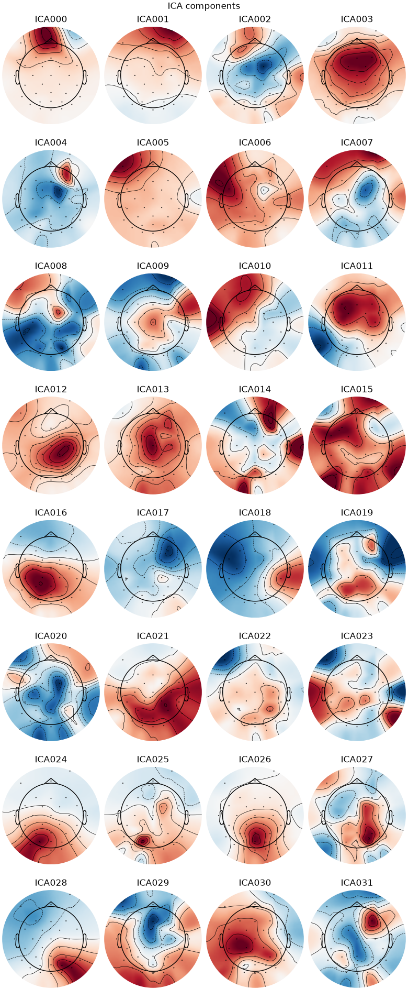

Note
Go to the end to download the full example code.
Run AMICA on EEG Data#
In this tutorial we will:
Run AMICA on EEG data
Compare our results to Fortran AMICA.
Export our AMICA instance to an
mne.preprocessing.ICAobject.
import amica
from amica import AMICA
import matplotlib.pyplot as plt
import mne
import numpy as np
Download sample data#
data_path = amica.datasets.data_path()
Load Fortran AMICA initial weights and results#
This is not necessary to run AMICA in Python, but we are going to compare amica-python results to those obtained from the original Fortran implementation.
initial_weights, initial_scales, initial_locations = amica.utils.load_initial_weights(
data_path / "eeglab_sample_data" / "amicaout_test", n_components=32, n_mixtures=3
)
Load EEG data#
amica_outdir = data_path / "eeglab_sample_data" / "amicaout_test"
fortran_results = amica.utils.load_fortran_results(
amica_outdir, n_components=32, n_mixtures=3
)
raw = mne.io.read_raw_eeglab(
data_path / "eeglab_sample_data"/ "eeglab_data.set", preload=True
)
data = raw.get_data().T # Shape (n_samples, n_channels)
data *= 1e6 # Convert from Volts to microVolts
Reading /home/circleci/amica_test_data/eeglab_sample_data/eeglab_data.fdt
Reading 0 ... 30503 = 0.000 ... 238.305 secs...
Run AMICA-Python#
transformer = AMICA(
max_iter=2000,
w_init=initial_weights,
sbeta_init=initial_scales,
mu_init=initial_locations,
tol=1e-7,
verbose=2,
)
transformer.fit(data)
INFO getting the mean ...
INFO Getting the covariance matrix ...
INFO doing eigenvalue decomposition for 32 features ...
INFO minimum eigenvalues: [4.87990051 6.92011971 7.65621479]
INFO maximum eigenvalues: [9711.14308385 3039.68504351 1244.41294471]
INFO num eigvals kept: 32
INFO Sphering the data...
INFO numeigs = 32, nw = 32
INFO 1: block size = 30504
INFO Solving. (please be patient, this may take a while)...
INFO Iteration 1, lrate = 0.05000, LL = -3.5136812, nd = 0.0578126, D =
0.00000 took 0.54 seconds
INFO Iteration 2, lrate = 0.05000, LL = -3.4687938, nd = 0.0254382, D =
0.00000 took 0.48 seconds
INFO Iteration 3, lrate = 0.05000, LL = -3.4616091, nd = 0.0243398, D =
0.00000 took 0.59 seconds
INFO Iteration 4, lrate = 0.05000, LL = -3.4589193, nd = 0.0270364, D =
0.00000 took 0.47 seconds
INFO Iteration 5, lrate = 0.05000, LL = -3.4569812, nd = 0.0277558, D =
0.00000 took 0.52 seconds
INFO Iteration 6, lrate = 0.05000, LL = -3.4553322, nd = 0.0273357, D =
0.00000 took 0.58 seconds
INFO Iteration 7, lrate = 0.05000, LL = -3.4538623, nd = 0.0264404, D =
0.00000 took 0.69 seconds
INFO Iteration 8, lrate = 0.05000, LL = -3.4525343, nd = 0.0253345, D =
0.00000 took 0.41 seconds
INFO Iteration 9, lrate = 0.05000, LL = -3.4513420, nd = 0.0240416, D =
0.00000 took 0.50 seconds
INFO Iteration 10, lrate = 0.05000, LL = -3.4502899, nd = 0.0225474, D =
0.00000 took 0.58 seconds
INFO Iteration 11, lrate = 0.05000, LL = -3.4493809, nd = 0.0208813, D =
0.00000 took 0.40 seconds
INFO Iteration 12, lrate = 0.05000, LL = -3.4486110, nd = 0.0191353, D =
0.00000 took 0.41 seconds
INFO Iteration 13, lrate = 0.05000, LL = -3.4479764, nd = 0.0173011, D =
0.00000 took 0.50 seconds
INFO Iteration 14, lrate = 0.05000, LL = -3.4474541, nd = 0.0157056, D =
0.00000 took 0.59 seconds
INFO Iteration 15, lrate = 0.05000, LL = -3.4470225, nd = 0.0143406, D =
0.00000 took 0.69 seconds
INFO Iteration 16, lrate = 0.05000, LL = -3.4466616, nd = 0.0132090, D =
0.00000 took 0.47 seconds
INFO Iteration 17, lrate = 0.05000, LL = -3.4463550, nd = 0.0123145, D =
0.00000 took 0.54 seconds
INFO Iteration 18, lrate = 0.05000, LL = -3.4460867, nd = 0.0116322, D =
0.00000 took 0.39 seconds
INFO Iteration 19, lrate = 0.05000, LL = -3.4458468, nd = 0.0111257, D =
0.00000 took 0.42 seconds
INFO Iteration 20, lrate = 0.05000, LL = -3.4456262, nd = 0.0107487, D =
0.00000 took 0.33 seconds
INFO Iteration 21, lrate = 0.05000, LL = -3.4454204, nd = 0.0104630, D =
0.00000 took 0.50 seconds
INFO Iteration 22, lrate = 0.05000, LL = -3.4452273, nd = 0.0102425, D =
0.00000 took 0.71 seconds
INFO Iteration 23, lrate = 0.05000, LL = -3.4450415, nd = 0.0100660, D =
0.00000 took 0.69 seconds
INFO Iteration 24, lrate = 0.05000, LL = -3.4448618, nd = 0.0099203, D =
0.00000 took 0.57 seconds
INFO Iteration 25, lrate = 0.05000, LL = -3.4446912, nd = 0.0097931, D =
0.00000 took 0.44 seconds
INFO Iteration 26, lrate = 0.05000, LL = -3.4445243, nd = 0.0096852, D =
0.00000 took 0.50 seconds
INFO Iteration 27, lrate = 0.05000, LL = -3.4443607, nd = 0.0095884, D =
0.00000 took 0.70 seconds
INFO Iteration 28, lrate = 0.05000, LL = -3.4442006, nd = 0.0094988, D =
0.00000 took 0.59 seconds
INFO Iteration 29, lrate = 0.05000, LL = -3.4440446, nd = 0.0094170, D =
0.00000 took 0.52 seconds
INFO Iteration 30, lrate = 0.05000, LL = -3.4438918, nd = 0.0093397, D =
0.00000 took 0.67 seconds
INFO Iteration 31, lrate = 0.05000, LL = -3.4437411, nd = 0.0092655, D =
0.00000 took 0.61 seconds
INFO Iteration 32, lrate = 0.05000, LL = -3.4435931, nd = 0.0091973, D =
0.00000 took 0.69 seconds
INFO Iteration 33, lrate = 0.05000, LL = -3.4434482, nd = 0.0091364, D =
0.00000 took 0.47 seconds
INFO Iteration 34, lrate = 0.05000, LL = -3.4433056, nd = 0.0090779, D =
0.00000 took 0.21 seconds
INFO Iteration 35, lrate = 0.05000, LL = -3.4431648, nd = 0.0090264, D =
0.00000 took 0.21 seconds
INFO Iteration 36, lrate = 0.05000, LL = -3.4430258, nd = 0.0089774, D =
0.00000 took 0.26 seconds
INFO Iteration 37, lrate = 0.05000, LL = -3.4428882, nd = 0.0089302, D =
0.00000 took 0.23 seconds
INFO Iteration 38, lrate = 0.05000, LL = -3.4427523, nd = 0.0088831, D =
0.00000 took 0.29 seconds
INFO Iteration 39, lrate = 0.05000, LL = -3.4426179, nd = 0.0088394, D =
0.00000 took 0.21 seconds
INFO Iteration 40, lrate = 0.05000, LL = -3.4424848, nd = 0.0087981, D =
0.00000 took 0.30 seconds
INFO Iteration 41, lrate = 0.05000, LL = -3.4423534, nd = 0.0087563, D =
0.00000 took 0.30 seconds
INFO Iteration 42, lrate = 0.05000, LL = -3.4422229, nd = 0.0087200, D =
0.00000 took 0.29 seconds
INFO Iteration 43, lrate = 0.05000, LL = -3.4420933, nd = 0.0086856, D =
0.00000 took 0.21 seconds
INFO Iteration 44, lrate = 0.05000, LL = -3.4419647, nd = 0.0086511, D =
0.00000 took 0.29 seconds
INFO Iteration 45, lrate = 0.05000, LL = -3.4418371, nd = 0.0086194, D =
0.00000 took 0.30 seconds
INFO Iteration 46, lrate = 0.05000, LL = -3.4417102, nd = 0.0085878, D =
0.00000 took 0.21 seconds
INFO Iteration 47, lrate = 0.05000, LL = -3.4415846, nd = 0.0085552, D =
0.00000 took 0.30 seconds
INFO Iteration 48, lrate = 0.05000, LL = -3.4414600, nd = 0.0085208, D =
0.00000 took 0.29 seconds
INFO Iteration 49, lrate = 0.05000, LL = -3.4413363, nd = 0.0084877, D =
0.00000 took 0.29 seconds
INFO Iteration 50, lrate = 0.10000, LL = -3.4412139, nd = 0.0073546, D =
0.00000 took 0.32 seconds
INFO Starting Newton ... setting numdecs to 0
INFO Iteration 51, lrate = 0.20000, LL = -3.4410150, nd = 0.0073384, D =
0.00000 took 0.49 seconds
INFO Iteration 52, lrate = 0.30000, LL = -3.4406291, nd = 0.0072820, D =
0.00000 took 0.49 seconds
INFO Iteration 53, lrate = 0.40000, LL = -3.4400643, nd = 0.0072112, D =
0.00000 took 0.52 seconds
INFO Iteration 54, lrate = 0.50000, LL = -3.4393281, nd = 0.0071186, D =
0.00000 took 0.54 seconds
INFO Iteration 55, lrate = 0.60000, LL = -3.4384312, nd = 0.0070112, D =
0.00000 took 0.50 seconds
INFO Iteration 56, lrate = 0.70000, LL = -3.4373846, nd = 0.0068983, D =
0.00000 took 0.90 seconds
INFO Iteration 57, lrate = 0.80000, LL = -3.4361988, nd = 0.0067658, D =
0.00000 took 0.79 seconds
INFO Iteration 58, lrate = 0.90000, LL = -3.4348923, nd = 0.0065755, D =
0.00000 took 0.60 seconds
INFO Iteration 59, lrate = 1.00000, LL = -3.4334917, nd = 0.0063574, D =
0.00000 took 0.75 seconds
INFO Iteration 60, lrate = 1.00000, LL = -3.4320223, nd = 0.0061063, D =
0.00000 took 1.12 seconds
INFO Iteration 61, lrate = 1.00000, LL = -3.4306410, nd = 0.0058430, D =
0.00000 took 1.00 seconds
INFO Iteration 62, lrate = 1.00000, LL = -3.4293548, nd = 0.0055594, D =
0.00000 took 0.70 seconds
INFO Iteration 63, lrate = 1.00000, LL = -3.4281749, nd = 0.0052842, D =
0.00000 took 0.60 seconds
INFO Iteration 64, lrate = 1.00000, LL = -3.4270995, nd = 0.0050445, D =
0.00000 took 0.39 seconds
INFO Iteration 65, lrate = 1.00000, LL = -3.4261198, nd = 0.0048182, D =
0.00000 took 0.30 seconds
INFO Iteration 66, lrate = 1.00000, LL = -3.4252247, nd = 0.0046344, D =
0.00000 took 0.31 seconds
INFO Iteration 67, lrate = 1.00000, LL = -3.4244008, nd = 0.0044609, D =
0.00000 took 0.39 seconds
INFO Iteration 68, lrate = 1.00000, LL = -3.4236400, nd = 0.0042993, D =
0.00000 took 0.49 seconds
INFO Iteration 69, lrate = 1.00000, LL = -3.4229354, nd = 0.0041617, D =
0.00000 took 0.60 seconds
INFO Iteration 70, lrate = 1.00000, LL = -3.4222749, nd = 0.0040363, D =
0.00000 took 1.00 seconds
INFO Iteration 71, lrate = 1.00000, LL = -3.4216569, nd = 0.0039236, D =
0.00000 took 0.91 seconds
INFO Iteration 72, lrate = 1.00000, LL = -3.4210676, nd = 0.0038292, D =
0.00000 took 0.99 seconds
INFO Iteration 73, lrate = 1.00000, LL = -3.4205067, nd = 0.0037454, D =
0.00000 took 0.91 seconds
INFO Iteration 74, lrate = 1.00000, LL = -3.4199669, nd = 0.0036845, D =
0.00000 took 1.10 seconds
INFO Iteration 75, lrate = 1.00000, LL = -3.4194425, nd = 0.0036254, D =
0.00000 took 0.85 seconds
INFO Iteration 76, lrate = 1.00000, LL = -3.4189330, nd = 0.0035612, D =
0.00000 took 0.74 seconds
INFO Iteration 77, lrate = 1.00000, LL = -3.4184379, nd = 0.0035080, D =
0.00000 took 0.71 seconds
INFO Iteration 78, lrate = 1.00000, LL = -3.4179546, nd = 0.0034499, D =
0.00000 took 0.99 seconds
INFO Iteration 79, lrate = 1.00000, LL = -3.4174861, nd = 0.0033852, D =
0.00000 took 0.75 seconds
INFO Iteration 80, lrate = 1.00000, LL = -3.4170331, nd = 0.0033210, D =
0.00000 took 0.92 seconds
INFO Iteration 81, lrate = 1.00000, LL = -3.4165986, nd = 0.0032332, D =
0.00000 took 0.70 seconds
INFO Iteration 82, lrate = 1.00000, LL = -3.4161852, nd = 0.0031529, D =
0.00000 took 0.66 seconds
INFO Iteration 83, lrate = 1.00000, LL = -3.4157931, nd = 0.0030533, D =
0.00000 took 0.74 seconds
INFO Iteration 84, lrate = 1.00000, LL = -3.4154233, nd = 0.0029693, D =
0.00000 took 0.68 seconds
INFO Iteration 85, lrate = 1.00000, LL = -3.4150739, nd = 0.0028899, D =
0.00000 took 0.71 seconds
INFO Iteration 86, lrate = 1.00000, LL = -3.4147424, nd = 0.0028206, D =
0.00000 took 0.70 seconds
INFO Iteration 87, lrate = 1.00000, LL = -3.4144267, nd = 0.0027514, D =
0.00000 took 0.80 seconds
INFO Iteration 88, lrate = 1.00000, LL = -3.4141255, nd = 0.0026904, D =
0.00000 took 0.80 seconds
INFO Iteration 89, lrate = 1.00000, LL = -3.4138373, nd = 0.0026319, D =
0.00000 took 0.90 seconds
INFO Iteration 90, lrate = 1.00000, LL = -3.4135610, nd = 0.0025800, D =
0.00000 took 0.90 seconds
INFO Iteration 91, lrate = 1.00000, LL = -3.4132954, nd = 0.0025343, D =
0.00000 took 0.89 seconds
INFO Iteration 92, lrate = 1.00000, LL = -3.4130393, nd = 0.0024909, D =
0.00000 took 0.50 seconds
INFO Iteration 93, lrate = 1.00000, LL = -3.4127923, nd = 0.0024389, D =
0.00000 took 0.76 seconds
INFO Iteration 94, lrate = 1.00000, LL = -3.4125554, nd = 0.0023924, D =
0.00000 took 0.75 seconds
INFO Iteration 95, lrate = 1.00000, LL = -3.4123275, nd = 0.0023498, D =
0.00000 took 0.89 seconds
INFO Iteration 96, lrate = 1.00000, LL = -3.4121076, nd = 0.0023106, D =
0.00000 took 0.80 seconds
INFO Iteration 97, lrate = 1.00000, LL = -3.4118961, nd = 0.0022841, D =
0.00000 took 0.89 seconds
INFO Iteration 98, lrate = 1.00000, LL = -3.4116885, nd = 0.0022625, D =
0.00000 took 0.60 seconds
INFO Iteration 99, lrate = 1.00000, LL = -3.4114855, nd = 0.0022437, D =
0.00000 took 0.97 seconds
INFO Iteration 100, lrate = 1.00000, LL = -3.4112853, nd = 0.0022377, D =
0.00000 took 0.81 seconds
INFO Iteration 101, lrate = 1.00000, LL = -3.4112516, nd = 0.0022937, D =
0.00000 took 0.90 seconds
INFO Iteration 102, lrate = 1.00000, LL = -3.4112247, nd = 0.0023247, D =
0.00000 took 0.80 seconds
INFO Iteration 103, lrate = 1.00000, LL = -3.4112015, nd = 0.0023462, D =
0.00000 took 0.50 seconds
INFO Iteration 104, lrate = 1.00000, LL = -3.4111783, nd = 0.0023621, D =
0.00000 took 0.39 seconds
INFO Iteration 105, lrate = 1.00000, LL = -3.4111557, nd = 0.0023754, D =
0.00000 took 0.31 seconds
INFO Iteration 106, lrate = 1.00000, LL = -3.4111346, nd = 0.0023869, D =
0.00000 took 0.39 seconds
INFO Iteration 107, lrate = 1.00000, LL = -3.4109297, nd = 0.0023265, D =
0.00000 took 0.30 seconds
INFO Iteration 108, lrate = 1.00000, LL = -3.4107317, nd = 0.0022889, D =
0.00000 took 0.30 seconds
INFO Iteration 109, lrate = 1.00000, LL = -3.4105361, nd = 0.0022696, D =
0.00000 took 0.31 seconds
INFO Iteration 110, lrate = 1.00000, LL = -3.4103416, nd = 0.0022626, D =
0.00000 took 0.39 seconds
INFO Iteration 111, lrate = 1.00000, LL = -3.4101470, nd = 0.0022590, D =
0.00000 took 0.40 seconds
INFO Iteration 112, lrate = 1.00000, LL = -3.4099520, nd = 0.0022426, D =
0.00000 took 0.39 seconds
INFO Iteration 113, lrate = 1.00000, LL = -3.4097586, nd = 0.0022281, D =
0.00000 took 0.62 seconds
INFO Iteration 114, lrate = 1.00000, LL = -3.4095665, nd = 0.0022077, D =
0.00000 took 0.70 seconds
INFO Iteration 115, lrate = 1.00000, LL = -3.4093768, nd = 0.0021901, D =
0.00000 took 0.90 seconds
INFO Iteration 116, lrate = 1.00000, LL = -3.4091882, nd = 0.0021746, D =
0.00000 took 0.95 seconds
INFO Iteration 117, lrate = 1.00000, LL = -3.4090016, nd = 0.0021591, D =
0.00000 took 0.93 seconds
INFO Iteration 118, lrate = 1.00000, LL = -3.4088168, nd = 0.0021381, D =
0.00000 took 1.00 seconds
INFO Iteration 119, lrate = 1.00000, LL = -3.4086341, nd = 0.0021182, D =
0.00000 took 0.86 seconds
INFO Iteration 120, lrate = 1.00000, LL = -3.4084541, nd = 0.0020985, D =
0.00000 took 0.93 seconds
INFO Iteration 121, lrate = 1.00000, LL = -3.4082776, nd = 0.0020724, D =
0.00000 took 0.61 seconds
INFO Iteration 122, lrate = 1.00000, LL = -3.4081057, nd = 0.0020401, D =
0.00000 took 0.60 seconds
INFO Iteration 123, lrate = 1.00000, LL = -3.4079364, nd = 0.0020030, D =
0.00000 took 0.79 seconds
INFO Iteration 124, lrate = 1.00000, LL = -3.4077745, nd = 0.0019680, D =
0.00000 took 0.61 seconds
INFO Iteration 125, lrate = 1.00000, LL = -3.4076165, nd = 0.0019221, D =
0.00000 took 0.90 seconds
INFO Iteration 126, lrate = 1.00000, LL = -3.4074642, nd = 0.0018741, D =
0.00000 took 0.74 seconds
INFO Iteration 127, lrate = 1.00000, LL = -3.4073201, nd = 0.0018278, D =
0.00000 took 0.66 seconds
INFO Iteration 128, lrate = 1.00000, LL = -3.4071809, nd = 0.0017897, D =
0.00000 took 0.92 seconds
INFO Iteration 129, lrate = 1.00000, LL = -3.4070471, nd = 0.0017525, D =
0.00000 took 0.66 seconds
INFO Iteration 130, lrate = 1.00000, LL = -3.4069156, nd = 0.0017219, D =
0.00000 took 0.74 seconds
INFO Iteration 131, lrate = 1.00000, LL = -3.4067873, nd = 0.0016955, D =
0.00000 took 0.88 seconds
INFO Iteration 132, lrate = 1.00000, LL = -3.4066619, nd = 0.0016797, D =
0.00000 took 0.98 seconds
INFO Iteration 133, lrate = 1.00000, LL = -3.4065363, nd = 0.0016733, D =
0.00000 took 0.81 seconds
INFO Iteration 134, lrate = 1.00000, LL = -3.4064104, nd = 0.0016754, D =
0.00000 took 1.02 seconds
INFO Iteration 135, lrate = 1.00000, LL = -3.4062820, nd = 0.0016889, D =
0.00000 took 0.89 seconds
INFO Iteration 136, lrate = 1.00000, LL = -3.4061524, nd = 0.0017094, D =
0.00000 took 0.51 seconds
INFO Iteration 137, lrate = 1.00000, LL = -3.4060170, nd = 0.0017297, D =
0.00000 took 1.09 seconds
INFO Iteration 138, lrate = 1.00000, LL = -3.4058781, nd = 0.0017368, D =
0.00000 took 0.90 seconds
INFO Iteration 139, lrate = 1.00000, LL = -3.4057374, nd = 0.0017285, D =
0.00000 took 1.00 seconds
INFO Iteration 140, lrate = 1.00000, LL = -3.4055980, nd = 0.0017090, D =
0.00000 took 1.10 seconds
INFO Iteration 141, lrate = 1.00000, LL = -3.4054604, nd = 0.0016876, D =
0.00000 took 1.29 seconds
INFO Iteration 142, lrate = 1.00000, LL = -3.4053257, nd = 0.0016626, D =
0.00000 took 0.79 seconds
INFO Iteration 143, lrate = 1.00000, LL = -3.4051957, nd = 0.0016310, D =
0.00000 took 0.86 seconds
INFO Iteration 144, lrate = 1.00000, LL = -3.4050687, nd = 0.0016039, D =
0.00000 took 0.92 seconds
INFO Iteration 145, lrate = 1.00000, LL = -3.4049453, nd = 0.0015778, D =
0.00000 took 0.79 seconds
INFO Iteration 146, lrate = 1.00000, LL = -3.4048242, nd = 0.0015507, D =
0.00000 took 0.75 seconds
INFO Iteration 147, lrate = 1.00000, LL = -3.4047069, nd = 0.0015253, D =
0.00000 took 0.60 seconds
INFO Iteration 148, lrate = 1.00000, LL = -3.4045908, nd = 0.0014931, D =
0.00000 took 0.73 seconds
INFO Iteration 149, lrate = 1.00000, LL = -3.4044807, nd = 0.0014660, D =
0.00000 took 0.99 seconds
INFO Iteration 150, lrate = 1.00000, LL = -3.4043814, nd = 0.0014385, D =
0.00000 took 0.91 seconds
INFO Iteration 151, lrate = 1.00000, LL = -3.4042852, nd = 0.0014065, D =
0.00000 took 0.81 seconds
INFO Iteration 152, lrate = 1.00000, LL = -3.4041929, nd = 0.0013698, D =
0.00000 took 0.70 seconds
INFO Iteration 153, lrate = 1.00000, LL = -3.4041055, nd = 0.0013315, D =
0.00000 took 1.05 seconds
INFO Iteration 154, lrate = 1.00000, LL = -3.4040214, nd = 0.0012951, D =
0.00000 took 0.74 seconds
INFO Iteration 155, lrate = 1.00000, LL = -3.4039401, nd = 0.0012581, D =
0.00000 took 0.70 seconds
INFO Iteration 156, lrate = 1.00000, LL = -3.4038629, nd = 0.0012229, D =
0.00000 took 1.06 seconds
INFO Iteration 157, lrate = 1.00000, LL = -3.4037883, nd = 0.0011892, D =
0.00000 took 0.63 seconds
INFO Iteration 158, lrate = 1.00000, LL = -3.4037178, nd = 0.0011557, D =
0.00000 took 0.68 seconds
INFO Iteration 159, lrate = 1.00000, LL = -3.4036495, nd = 0.0011234, D =
0.00000 took 0.51 seconds
INFO Iteration 160, lrate = 1.00000, LL = -3.4035841, nd = 0.0010956, D =
0.00000 took 0.49 seconds
INFO Iteration 161, lrate = 1.00000, LL = -3.4035199, nd = 0.0010696, D =
0.00000 took 0.40 seconds
INFO Iteration 162, lrate = 1.00000, LL = -3.4034587, nd = 0.0010428, D =
0.00000 took 0.41 seconds
INFO Iteration 163, lrate = 1.00000, LL = -3.4033992, nd = 0.0010192, D =
0.00000 took 0.49 seconds
INFO Iteration 164, lrate = 1.00000, LL = -3.4033466, nd = 0.0009988, D =
0.00000 took 0.40 seconds
INFO Iteration 165, lrate = 1.00000, LL = -3.4032960, nd = 0.0009743, D =
0.00000 took 0.40 seconds
INFO Iteration 166, lrate = 1.00000, LL = -3.4032470, nd = 0.0009564, D =
0.00000 took 0.59 seconds
INFO Iteration 167, lrate = 1.00000, LL = -3.4031999, nd = 0.0009389, D =
0.00000 took 0.40 seconds
INFO Iteration 168, lrate = 1.00000, LL = -3.4031531, nd = 0.0009255, D =
0.00000 took 0.50 seconds
INFO Iteration 169, lrate = 1.00000, LL = -3.4031074, nd = 0.0009100, D =
0.00000 took 0.56 seconds
INFO Iteration 170, lrate = 1.00000, LL = -3.4030626, nd = 0.0008977, D =
0.00000 took 0.54 seconds
INFO Iteration 171, lrate = 1.00000, LL = -3.4030187, nd = 0.0008862, D =
0.00000 took 0.51 seconds
INFO Iteration 172, lrate = 1.00000, LL = -3.4029757, nd = 0.0008756, D =
0.00000 took 0.60 seconds
INFO Iteration 173, lrate = 1.00000, LL = -3.4029332, nd = 0.0008623, D =
0.00000 took 0.50 seconds
INFO Iteration 174, lrate = 1.00000, LL = -3.4028914, nd = 0.0008520, D =
0.00000 took 0.48 seconds
INFO Iteration 175, lrate = 1.00000, LL = -3.4028500, nd = 0.0008431, D =
0.00000 took 0.82 seconds
INFO Iteration 176, lrate = 1.00000, LL = -3.4028089, nd = 0.0008379, D =
0.00000 took 0.79 seconds
INFO Iteration 177, lrate = 1.00000, LL = -3.4027682, nd = 0.0008311, D =
0.00000 took 0.70 seconds
INFO Iteration 178, lrate = 1.00000, LL = -3.4027281, nd = 0.0008217, D =
0.00000 took 0.81 seconds
INFO Iteration 179, lrate = 1.00000, LL = -3.4026881, nd = 0.0008165, D =
0.00000 took 1.00 seconds
INFO Iteration 180, lrate = 1.00000, LL = -3.4026483, nd = 0.0008089, D =
0.00000 took 0.70 seconds
INFO Iteration 181, lrate = 1.00000, LL = -3.4026082, nd = 0.0008021, D =
0.00000 took 0.49 seconds
INFO Iteration 182, lrate = 1.00000, LL = -3.4025683, nd = 0.0007962, D =
0.00000 took 0.30 seconds
INFO Iteration 183, lrate = 1.00000, LL = -3.4025279, nd = 0.0007888, D =
0.00000 took 0.30 seconds
INFO Iteration 184, lrate = 1.00000, LL = -3.4024888, nd = 0.0007813, D =
0.00000 took 0.30 seconds
INFO Iteration 185, lrate = 1.00000, LL = -3.4024509, nd = 0.0007758, D =
0.00000 took 0.38 seconds
INFO Iteration 186, lrate = 1.00000, LL = -3.4024135, nd = 0.0007711, D =
0.00000 took 0.31 seconds
INFO Iteration 187, lrate = 1.00000, LL = -3.4023757, nd = 0.0007635, D =
0.00000 took 0.30 seconds
INFO Iteration 188, lrate = 1.00000, LL = -3.4023376, nd = 0.0007570, D =
0.00000 took 0.30 seconds
INFO Iteration 189, lrate = 1.00000, LL = -3.4022991, nd = 0.0007555, D =
0.00000 took 0.29 seconds
INFO Iteration 190, lrate = 1.00000, LL = -3.4022589, nd = 0.0007570, D =
0.00000 took 0.30 seconds
INFO Iteration 191, lrate = 1.00000, LL = -3.4022169, nd = 0.0007569, D =
0.00000 took 0.21 seconds
INFO Iteration 192, lrate = 1.00000, LL = -3.4021729, nd = 0.0007584, D =
0.00000 took 0.29 seconds
INFO Iteration 193, lrate = 1.00000, LL = -3.4021264, nd = 0.0007567, D =
0.00000 took 0.29 seconds
INFO Iteration 194, lrate = 1.00000, LL = -3.4020771, nd = 0.0007553, D =
0.00000 took 0.31 seconds
INFO Iteration 195, lrate = 1.00000, LL = -3.4020353, nd = 0.0007532, D =
0.00000 took 0.29 seconds
INFO Iteration 196, lrate = 1.00000, LL = -3.4019983, nd = 0.0007490, D =
0.00000 took 0.30 seconds
INFO Iteration 197, lrate = 1.00000, LL = -3.4019614, nd = 0.0007462, D =
0.00000 took 0.40 seconds
INFO Iteration 198, lrate = 1.00000, LL = -3.4019246, nd = 0.0007458, D =
0.00000 took 0.41 seconds
INFO Iteration 199, lrate = 1.00000, LL = -3.4018874, nd = 0.0007428, D =
0.00000 took 0.48 seconds
INFO Iteration 200, lrate = 1.00000, LL = -3.4018497, nd = 0.0007408, D =
0.00000 took 0.60 seconds
INFO Iteration 201, lrate = 1.00000, LL = -3.4018276, nd = 0.0007734, D =
0.00000 took 0.61 seconds
INFO Iteration 202, lrate = 1.00000, LL = -3.4018050, nd = 0.0007904, D =
0.00000 took 0.70 seconds
INFO Iteration 203, lrate = 1.00000, LL = -3.4017810, nd = 0.0008068, D =
0.00000 took 0.89 seconds
INFO Iteration 204, lrate = 1.00000, LL = -3.4017551, nd = 0.0008252, D =
0.00000 took 0.81 seconds
INFO Iteration 205, lrate = 1.00000, LL = -3.4017259, nd = 0.0008474, D =
0.00000 took 0.98 seconds
INFO Iteration 206, lrate = 1.00000, LL = -3.4016919, nd = 0.0008770, D =
0.00000 took 0.87 seconds
INFO Iteration 207, lrate = 1.00000, LL = -3.4016278, nd = 0.0008342, D =
0.00000 took 0.88 seconds
INFO Iteration 208, lrate = 1.00000, LL = -3.4015582, nd = 0.0008370, D =
0.00000 took 0.73 seconds
INFO Iteration 209, lrate = 1.00000, LL = -3.4014960, nd = 0.0008159, D =
0.00000 took 0.90 seconds
INFO Iteration 210, lrate = 1.00000, LL = -3.4014515, nd = 0.0008031, D =
0.00000 took 1.30 seconds
INFO Iteration 211, lrate = 1.00000, LL = -3.4014155, nd = 0.0007821, D =
0.00000 took 1.28 seconds
INFO Iteration 212, lrate = 1.00000, LL = -3.4013815, nd = 0.0007693, D =
0.00000 took 0.92 seconds
INFO Iteration 213, lrate = 1.00000, LL = -3.4013481, nd = 0.0007596, D =
0.00000 took 0.90 seconds
INFO Iteration 214, lrate = 1.00000, LL = -3.4013152, nd = 0.0007574, D =
0.00000 took 1.20 seconds
INFO Iteration 215, lrate = 1.00000, LL = -3.4012828, nd = 0.0007522, D =
0.00000 took 0.65 seconds
INFO Iteration 216, lrate = 1.00000, LL = -3.4012510, nd = 0.0007463, D =
0.00000 took 0.73 seconds
INFO Iteration 217, lrate = 1.00000, LL = -3.4012202, nd = 0.0007386, D =
0.00000 took 0.79 seconds
INFO Iteration 218, lrate = 1.00000, LL = -3.4011902, nd = 0.0007333, D =
0.00000 took 0.71 seconds
INFO Iteration 219, lrate = 1.00000, LL = -3.4011607, nd = 0.0007291, D =
0.00000 took 0.61 seconds
INFO Iteration 220, lrate = 1.00000, LL = -3.4011325, nd = 0.0007257, D =
0.00000 took 1.18 seconds
INFO Iteration 221, lrate = 1.00000, LL = -3.4011054, nd = 0.0007241, D =
0.00000 took 0.82 seconds
INFO Iteration 222, lrate = 1.00000, LL = -3.4010791, nd = 0.0007226, D =
0.00000 took 0.80 seconds
INFO Iteration 223, lrate = 1.00000, LL = -3.4010531, nd = 0.0007154, D =
0.00000 took 0.79 seconds
INFO Iteration 224, lrate = 1.00000, LL = -3.4010274, nd = 0.0007111, D =
0.00000 took 1.01 seconds
INFO Iteration 225, lrate = 1.00000, LL = -3.4010023, nd = 0.0007097, D =
0.00000 took 1.04 seconds
INFO Iteration 226, lrate = 1.00000, LL = -3.4009773, nd = 0.0007035, D =
0.00000 took 0.90 seconds
INFO Iteration 227, lrate = 1.00000, LL = -3.4009522, nd = 0.0007017, D =
0.00000 took 1.19 seconds
INFO Iteration 228, lrate = 1.00000, LL = -3.4009272, nd = 0.0006978, D =
0.00000 took 1.10 seconds
INFO Iteration 229, lrate = 1.00000, LL = -3.4009023, nd = 0.0006936, D =
0.00000 took 0.70 seconds
INFO Iteration 230, lrate = 1.00000, LL = -3.4008777, nd = 0.0006917, D =
0.00000 took 0.69 seconds
INFO Iteration 231, lrate = 1.00000, LL = -3.4008531, nd = 0.0006892, D =
0.00000 took 0.51 seconds
INFO Iteration 232, lrate = 1.00000, LL = -3.4008284, nd = 0.0006861, D =
0.00000 took 0.55 seconds
INFO Iteration 233, lrate = 1.00000, LL = -3.4008036, nd = 0.0006806, D =
0.00000 took 0.50 seconds
INFO Iteration 234, lrate = 1.00000, LL = -3.4007787, nd = 0.0006732, D =
0.00000 took 1.03 seconds
INFO Iteration 235, lrate = 1.00000, LL = -3.4007538, nd = 0.0006660, D =
0.00000 took 0.89 seconds
INFO Iteration 236, lrate = 1.00000, LL = -3.4007288, nd = 0.0006645, D =
0.00000 took 0.71 seconds
INFO Iteration 237, lrate = 1.00000, LL = -3.4007035, nd = 0.0006605, D =
0.00000 took 0.79 seconds
INFO Iteration 238, lrate = 1.00000, LL = -3.4006782, nd = 0.0006608, D =
0.00000 took 0.80 seconds
INFO Iteration 239, lrate = 1.00000, LL = -3.4006524, nd = 0.0006515, D =
0.00000 took 0.61 seconds
INFO Iteration 240, lrate = 1.00000, LL = -3.4006263, nd = 0.0006485, D =
0.00000 took 0.88 seconds
INFO Iteration 241, lrate = 1.00000, LL = -3.4005998, nd = 0.0006404, D =
0.00000 took 0.56 seconds
INFO Iteration 242, lrate = 1.00000, LL = -3.4005730, nd = 0.0006323, D =
0.00000 took 0.35 seconds
INFO Iteration 243, lrate = 1.00000, LL = -3.4005456, nd = 0.0006253, D =
0.00000 took 0.59 seconds
INFO Iteration 244, lrate = 1.00000, LL = -3.4005176, nd = 0.0006196, D =
0.00000 took 0.40 seconds
INFO Iteration 245, lrate = 1.00000, LL = -3.4004888, nd = 0.0006144, D =
0.00000 took 1.19 seconds
INFO Iteration 246, lrate = 1.00000, LL = -3.4004589, nd = 0.0006105, D =
0.00000 took 1.10 seconds
INFO Iteration 247, lrate = 1.00000, LL = -3.4004274, nd = 0.0006030, D =
0.00000 took 1.10 seconds
INFO Iteration 248, lrate = 1.00000, LL = -3.4003946, nd = 0.0005998, D =
0.00000 took 1.08 seconds
INFO Iteration 249, lrate = 1.00000, LL = -3.4003643, nd = 0.0005915, D =
0.00000 took 0.97 seconds
INFO Iteration 250, lrate = 1.00000, LL = -3.4003387, nd = 0.0005877, D =
0.00000 took 0.92 seconds
INFO Iteration 251, lrate = 1.00000, LL = -3.4003157, nd = 0.0005761, D =
0.00000 took 0.60 seconds
INFO Iteration 252, lrate = 1.00000, LL = -3.4002930, nd = 0.0005713, D =
0.00000 took 0.60 seconds
INFO Iteration 253, lrate = 1.00000, LL = -3.4002701, nd = 0.0005649, D =
0.00000 took 0.59 seconds
INFO Iteration 254, lrate = 1.00000, LL = -3.4002471, nd = 0.0005651, D =
0.00000 took 0.51 seconds
INFO Iteration 255, lrate = 1.00000, LL = -3.4002234, nd = 0.0005606, D =
0.00000 took 0.59 seconds
INFO Iteration 256, lrate = 1.00000, LL = -3.4001992, nd = 0.0005600, D =
0.00000 took 0.61 seconds
INFO Iteration 257, lrate = 1.00000, LL = -3.4001742, nd = 0.0005555, D =
0.00000 took 0.70 seconds
INFO Iteration 258, lrate = 1.00000, LL = -3.4001503, nd = 0.0005528, D =
0.00000 took 0.60 seconds
INFO Iteration 259, lrate = 1.00000, LL = -3.4001255, nd = 0.0005458, D =
0.00000 took 0.48 seconds
INFO Iteration 260, lrate = 1.00000, LL = -3.4000999, nd = 0.0005435, D =
0.00000 took 0.80 seconds
INFO Iteration 261, lrate = 1.00000, LL = -3.4000730, nd = 0.0005369, D =
0.00000 took 0.29 seconds
INFO Iteration 262, lrate = 1.00000, LL = -3.4000448, nd = 0.0005390, D =
0.00000 took 0.22 seconds
INFO Iteration 263, lrate = 1.00000, LL = -3.4000140, nd = 0.0005336, D =
0.00000 took 0.29 seconds
INFO Iteration 264, lrate = 1.00000, LL = -3.3999859, nd = 0.0005346, D =
0.00000 took 0.31 seconds
INFO Iteration 265, lrate = 1.00000, LL = -3.3999597, nd = 0.0005236, D =
0.00000 took 0.39 seconds
INFO Iteration 266, lrate = 1.00000, LL = -3.3999327, nd = 0.0005213, D =
0.00000 took 0.40 seconds
INFO Iteration 267, lrate = 1.00000, LL = -3.3999040, nd = 0.0005132, D =
0.00000 took 0.31 seconds
INFO Iteration 268, lrate = 1.00000, LL = -3.3998740, nd = 0.0005178, D =
0.00000 took 0.48 seconds
INFO Iteration 269, lrate = 1.00000, LL = -3.3998425, nd = 0.0005151, D =
0.00000 took 0.50 seconds
INFO Iteration 270, lrate = 1.00000, LL = -3.3998117, nd = 0.0005259, D =
0.00000 took 0.47 seconds
INFO Iteration 271, lrate = 1.00000, LL = -3.3997830, nd = 0.0005214, D =
0.00000 took 0.55 seconds
INFO Iteration 272, lrate = 1.00000, LL = -3.3997571, nd = 0.0005232, D =
0.00000 took 0.40 seconds
INFO Iteration 273, lrate = 1.00000, LL = -3.3997325, nd = 0.0005048, D =
0.00000 took 0.43 seconds
INFO Iteration 274, lrate = 1.00000, LL = -3.3997080, nd = 0.0005022, D =
0.00000 took 0.29 seconds
INFO Iteration 275, lrate = 1.00000, LL = -3.3996827, nd = 0.0004838, D =
0.00000 took 0.60 seconds
INFO Iteration 276, lrate = 1.00000, LL = -3.3996562, nd = 0.0004876, D =
0.00000 took 0.40 seconds
INFO Iteration 277, lrate = 1.00000, LL = -3.3996281, nd = 0.0004755, D =
0.00000 took 0.51 seconds
INFO Iteration 278, lrate = 1.00000, LL = -3.3995987, nd = 0.0004878, D =
0.00000 took 0.45 seconds
INFO Iteration 279, lrate = 1.00000, LL = -3.3995686, nd = 0.0004825, D =
0.00000 took 0.53 seconds
INFO Iteration 280, lrate = 1.00000, LL = -3.3995394, nd = 0.0004942, D =
0.00000 took 0.76 seconds
INFO Iteration 281, lrate = 1.00000, LL = -3.3995124, nd = 0.0004904, D =
0.00000 took 0.64 seconds
INFO Iteration 282, lrate = 1.00000, LL = -3.3994875, nd = 0.0004850, D =
0.00000 took 0.90 seconds
INFO Iteration 283, lrate = 1.00000, LL = -3.3994629, nd = 0.0004843, D =
0.00000 took 0.46 seconds
INFO Iteration 284, lrate = 1.00000, LL = -3.3994393, nd = 0.0004726, D =
0.00000 took 0.73 seconds
INFO Iteration 285, lrate = 1.00000, LL = -3.3994198, nd = 0.0004764, D =
0.00000 took 0.81 seconds
INFO Iteration 286, lrate = 1.00000, LL = -3.3994006, nd = 0.0004639, D =
0.00000 took 0.96 seconds
INFO Iteration 287, lrate = 1.00000, LL = -3.3993807, nd = 0.0004731, D =
0.00000 took 0.93 seconds
INFO Iteration 288, lrate = 1.00000, LL = -3.3993624, nd = 0.0004649, D =
0.00000 took 1.09 seconds
INFO Iteration 289, lrate = 1.00000, LL = -3.3993444, nd = 0.0004761, D =
0.00000 took 0.87 seconds
INFO Iteration 290, lrate = 1.00000, LL = -3.3993262, nd = 0.0004709, D =
0.00000 took 0.88 seconds
INFO Iteration 291, lrate = 1.00000, LL = -3.3993072, nd = 0.0004872, D =
0.00000 took 0.54 seconds
INFO Iteration 292, lrate = 1.00000, LL = -3.3992877, nd = 0.0004846, D =
0.00000 took 0.60 seconds
INFO Iteration 293, lrate = 1.00000, LL = -3.3992672, nd = 0.0005035, D =
0.00000 took 0.85 seconds
INFO Iteration 294, lrate = 1.00000, LL = -3.3992461, nd = 0.0005050, D =
0.00000 took 0.74 seconds
INFO Iteration 295, lrate = 1.00000, LL = -3.3992240, nd = 0.0005288, D =
0.00000 took 0.79 seconds
INFO Iteration 296, lrate = 1.00000, LL = -3.3992016, nd = 0.0005318, D =
0.00000 took 0.89 seconds
INFO Iteration 297, lrate = 1.00000, LL = -3.3991786, nd = 0.0005627, D =
0.00000 took 1.10 seconds
INFO Iteration 298, lrate = 1.00000, LL = -3.3991562, nd = 0.0005651, D =
0.00000 took 0.61 seconds
INFO Iteration 299, lrate = 1.00000, LL = -3.3991343, nd = 0.0006043, D =
0.00000 took 0.89 seconds
INFO Iteration 300, lrate = 1.00000, LL = -3.3991137, nd = 0.0006033, D =
0.00000 took 0.80 seconds
INFO Iteration 301, lrate = 1.00000, LL = -3.3990863, nd = 0.0004005, D =
0.00000 took 0.90 seconds
INFO Iteration 302, lrate = 1.00000, LL = -3.3990702, nd = 0.0004213, D =
0.00000 took 1.40 seconds
INFO Iteration 303, lrate = 1.00000, LL = -3.3990561, nd = 0.0004451, D =
0.00000 took 1.40 seconds
INFO Iteration 304, lrate = 1.00000, LL = -3.3990428, nd = 0.0004676, D =
0.00000 took 1.38 seconds
INFO Iteration 305, lrate = 1.00000, LL = -3.3990296, nd = 0.0004880, D =
0.00000 took 1.40 seconds
INFO Iteration 306, lrate = 1.00000, LL = -3.3990161, nd = 0.0005056, D =
0.00000 took 1.26 seconds
INFO Iteration 307, lrate = 1.00000, LL = -3.3989941, nd = 0.0004034, D =
0.00000 took 0.83 seconds
INFO Iteration 308, lrate = 1.00000, LL = -3.3989724, nd = 0.0003729, D =
0.00000 took 0.71 seconds
INFO Iteration 309, lrate = 1.00000, LL = -3.3989486, nd = 0.0003467, D =
0.00000 took 1.05 seconds
INFO Iteration 310, lrate = 1.00000, LL = -3.3989216, nd = 0.0003378, D =
0.00000 took 1.18 seconds
INFO Iteration 311, lrate = 1.00000, LL = -3.3988907, nd = 0.0003291, D =
0.00000 took 0.67 seconds
INFO Iteration 312, lrate = 1.00000, LL = -3.3988581, nd = 0.0003397, D =
0.00000 took 0.53 seconds
INFO Iteration 313, lrate = 1.00000, LL = -3.3988304, nd = 0.0003531, D =
0.00000 took 0.41 seconds
INFO Iteration 314, lrate = 1.00000, LL = -3.3988124, nd = 0.0003568, D =
0.00000 took 0.78 seconds
INFO Iteration 315, lrate = 1.00000, LL = -3.3988004, nd = 0.0003374, D =
0.00000 took 0.40 seconds
INFO Iteration 316, lrate = 1.00000, LL = -3.3987921, nd = 0.0003107, D =
0.00000 took 0.30 seconds
INFO Iteration 317, lrate = 1.00000, LL = -3.3987852, nd = 0.0002902, D =
0.00000 took 0.36 seconds
INFO Iteration 318, lrate = 1.00000, LL = -3.3987790, nd = 0.0002709, D =
0.00000 took 0.34 seconds
INFO Iteration 319, lrate = 1.00000, LL = -3.3987733, nd = 0.0002600, D =
0.00000 took 0.30 seconds
INFO Iteration 320, lrate = 1.00000, LL = -3.3987678, nd = 0.0002485, D =
0.00000 took 0.30 seconds
INFO Iteration 321, lrate = 1.00000, LL = -3.3987625, nd = 0.0002414, D =
0.00000 took 0.31 seconds
INFO Iteration 322, lrate = 1.00000, LL = -3.3987575, nd = 0.0002322, D =
0.00000 took 0.49 seconds
INFO Iteration 323, lrate = 1.00000, LL = -3.3987526, nd = 0.0002269, D =
0.00000 took 0.29 seconds
INFO Iteration 324, lrate = 1.00000, LL = -3.3987478, nd = 0.0002216, D =
0.00000 took 0.30 seconds
INFO Iteration 325, lrate = 1.00000, LL = -3.3987431, nd = 0.0002162, D =
0.00000 took 0.50 seconds
INFO Iteration 326, lrate = 1.00000, LL = -3.3987386, nd = 0.0002134, D =
0.00000 took 0.30 seconds
INFO Iteration 327, lrate = 1.00000, LL = -3.3987341, nd = 0.0002097, D =
0.00000 took 0.30 seconds
INFO Iteration 328, lrate = 1.00000, LL = -3.3987298, nd = 0.0002048, D =
0.00000 took 0.40 seconds
INFO Iteration 329, lrate = 1.00000, LL = -3.3987255, nd = 0.0001996, D =
0.00000 took 0.39 seconds
INFO Iteration 330, lrate = 1.00000, LL = -3.3987213, nd = 0.0001943, D =
0.00000 took 0.42 seconds
INFO Iteration 331, lrate = 1.00000, LL = -3.3987173, nd = 0.0001895, D =
0.00000 took 0.49 seconds
INFO Iteration 332, lrate = 1.00000, LL = -3.3987134, nd = 0.0001875, D =
0.00000 took 0.41 seconds
INFO Iteration 333, lrate = 1.00000, LL = -3.3987095, nd = 0.0001841, D =
0.00000 took 0.60 seconds
INFO Iteration 334, lrate = 1.00000, LL = -3.3987058, nd = 0.0001815, D =
0.00000 took 0.50 seconds
INFO Iteration 335, lrate = 1.00000, LL = -3.3987022, nd = 0.0001777, D =
0.00000 took 0.49 seconds
INFO Iteration 336, lrate = 1.00000, LL = -3.3986987, nd = 0.0001750, D =
0.00000 took 0.56 seconds
INFO Iteration 337, lrate = 1.00000, LL = -3.3986953, nd = 0.0001733, D =
0.00000 took 0.65 seconds
INFO Iteration 338, lrate = 1.00000, LL = -3.3986921, nd = 0.0001719, D =
0.00000 took 0.95 seconds
INFO Iteration 339, lrate = 1.00000, LL = -3.3986889, nd = 0.0001702, D =
0.00000 took 0.65 seconds
INFO Iteration 340, lrate = 1.00000, LL = -3.3986857, nd = 0.0001682, D =
0.00000 took 0.70 seconds
INFO Iteration 341, lrate = 1.00000, LL = -3.3986827, nd = 0.0001665, D =
0.00000 took 0.75 seconds
INFO Iteration 342, lrate = 1.00000, LL = -3.3986798, nd = 0.0001653, D =
0.00000 took 0.65 seconds
INFO Iteration 343, lrate = 1.00000, LL = -3.3986769, nd = 0.0001642, D =
0.00000 took 0.69 seconds
INFO Iteration 344, lrate = 1.00000, LL = -3.3986741, nd = 0.0001636, D =
0.00000 took 0.70 seconds
INFO Iteration 345, lrate = 1.00000, LL = -3.3986713, nd = 0.0001609, D =
0.00000 took 0.59 seconds
INFO Iteration 346, lrate = 1.00000, LL = -3.3986686, nd = 0.0001594, D =
0.00000 took 0.60 seconds
INFO Iteration 347, lrate = 1.00000, LL = -3.3986659, nd = 0.0001582, D =
0.00000 took 0.60 seconds
INFO Iteration 348, lrate = 1.00000, LL = -3.3986633, nd = 0.0001570, D =
0.00000 took 0.70 seconds
INFO Iteration 349, lrate = 1.00000, LL = -3.3986608, nd = 0.0001561, D =
0.00000 took 0.69 seconds
INFO Iteration 350, lrate = 1.00000, LL = -3.3986582, nd = 0.0001539, D =
0.00000 took 0.69 seconds
INFO Iteration 351, lrate = 1.00000, LL = -3.3986557, nd = 0.0001524, D =
0.00000 took 0.51 seconds
INFO Iteration 352, lrate = 1.00000, LL = -3.3986532, nd = 0.0001509, D =
0.00000 took 0.50 seconds
INFO Iteration 353, lrate = 1.00000, LL = -3.3986507, nd = 0.0001496, D =
0.00000 took 0.70 seconds
INFO Iteration 354, lrate = 1.00000, LL = -3.3986483, nd = 0.0001482, D =
0.00000 took 0.80 seconds
INFO Iteration 355, lrate = 1.00000, LL = -3.3986459, nd = 0.0001467, D =
0.00000 took 0.54 seconds
INFO Iteration 356, lrate = 1.00000, LL = -3.3986435, nd = 0.0001459, D =
0.00000 took 0.73 seconds
INFO Iteration 357, lrate = 1.00000, LL = -3.3986412, nd = 0.0001451, D =
0.00000 took 0.99 seconds
INFO Iteration 358, lrate = 1.00000, LL = -3.3986389, nd = 0.0001440, D =
0.00000 took 0.72 seconds
INFO Iteration 359, lrate = 1.00000, LL = -3.3986366, nd = 0.0001425, D =
0.00000 took 0.79 seconds
INFO Iteration 360, lrate = 1.00000, LL = -3.3986343, nd = 0.0001423, D =
0.00000 took 0.51 seconds
INFO Iteration 361, lrate = 1.00000, LL = -3.3986320, nd = 0.0001421, D =
0.00000 took 0.79 seconds
INFO Iteration 362, lrate = 1.00000, LL = -3.3986298, nd = 0.0001424, D =
0.00000 took 0.98 seconds
INFO Iteration 363, lrate = 1.00000, LL = -3.3986276, nd = 0.0001414, D =
0.00000 took 0.90 seconds
INFO Iteration 364, lrate = 1.00000, LL = -3.3986253, nd = 0.0001405, D =
0.00000 took 0.91 seconds
INFO Iteration 365, lrate = 1.00000, LL = -3.3986232, nd = 0.0001386, D =
0.00000 took 0.75 seconds
INFO Iteration 366, lrate = 1.00000, LL = -3.3986210, nd = 0.0001374, D =
0.00000 took 1.71 seconds
INFO Iteration 367, lrate = 1.00000, LL = -3.3986188, nd = 0.0001372, D =
0.00000 took 1.47 seconds
INFO Iteration 368, lrate = 1.00000, LL = -3.3986167, nd = 0.0001372, D =
0.00000 took 1.20 seconds
INFO Iteration 369, lrate = 1.00000, LL = -3.3986146, nd = 0.0001354, D =
0.00000 took 1.29 seconds
INFO Iteration 370, lrate = 1.00000, LL = -3.3986126, nd = 0.0001348, D =
0.00000 took 1.61 seconds
INFO Iteration 371, lrate = 1.00000, LL = -3.3986106, nd = 0.0001338, D =
0.00000 took 1.80 seconds
INFO Iteration 372, lrate = 1.00000, LL = -3.3986086, nd = 0.0001332, D =
0.00000 took 1.36 seconds
INFO Iteration 373, lrate = 1.00000, LL = -3.3986066, nd = 0.0001307, D =
0.00000 took 1.23 seconds
INFO Iteration 374, lrate = 1.00000, LL = -3.3986047, nd = 0.0001293, D =
0.00000 took 1.10 seconds
INFO Iteration 375, lrate = 1.00000, LL = -3.3986028, nd = 0.0001281, D =
0.00000 took 0.81 seconds
INFO Iteration 376, lrate = 1.00000, LL = -3.3986010, nd = 0.0001269, D =
0.00000 took 1.06 seconds
INFO Iteration 377, lrate = 1.00000, LL = -3.3985992, nd = 0.0001262, D =
0.00000 took 1.12 seconds
INFO Iteration 378, lrate = 1.00000, LL = -3.3985974, nd = 0.0001242, D =
0.00000 took 0.92 seconds
INFO Iteration 379, lrate = 1.00000, LL = -3.3985956, nd = 0.0001227, D =
0.00000 took 1.19 seconds
INFO Iteration 380, lrate = 1.00000, LL = -3.3985939, nd = 0.0001232, D =
0.00000 took 1.20 seconds
INFO Iteration 381, lrate = 1.00000, LL = -3.3985922, nd = 0.0001235, D =
0.00000 took 1.10 seconds
INFO Iteration 382, lrate = 1.00000, LL = -3.3985905, nd = 0.0001237, D =
0.00000 took 0.69 seconds
INFO Iteration 383, lrate = 1.00000, LL = -3.3985889, nd = 0.0001239, D =
0.00000 took 0.80 seconds
INFO Iteration 384, lrate = 1.00000, LL = -3.3985873, nd = 0.0001244, D =
0.00000 took 0.82 seconds
INFO Iteration 385, lrate = 1.00000, LL = -3.3985857, nd = 0.0001249, D =
0.00000 took 0.68 seconds
INFO Iteration 386, lrate = 1.00000, LL = -3.3985841, nd = 0.0001256, D =
0.00000 took 0.60 seconds
INFO Iteration 387, lrate = 1.00000, LL = -3.3985825, nd = 0.0001235, D =
0.00000 took 0.99 seconds
INFO Iteration 388, lrate = 1.00000, LL = -3.3985810, nd = 0.0001250, D =
0.00000 took 0.81 seconds
INFO Iteration 389, lrate = 1.00000, LL = -3.3985795, nd = 0.0001228, D =
0.00000 took 0.27 seconds
INFO Iteration 390, lrate = 1.00000, LL = -3.3985781, nd = 0.0001228, D =
0.00000 took 0.33 seconds
INFO Iteration 391, lrate = 1.00000, LL = -3.3985766, nd = 0.0001216, D =
0.00000 took 0.30 seconds
INFO Iteration 392, lrate = 1.00000, LL = -3.3985753, nd = 0.0001224, D =
0.00000 took 0.38 seconds
INFO Iteration 393, lrate = 1.00000, LL = -3.3985739, nd = 0.0001224, D =
0.00000 took 0.30 seconds
INFO Iteration 394, lrate = 1.00000, LL = -3.3985725, nd = 0.0001241, D =
0.00000 took 0.31 seconds
INFO Iteration 395, lrate = 1.00000, LL = -3.3985712, nd = 0.0001244, D =
0.00000 took 0.30 seconds
INFO Iteration 396, lrate = 1.00000, LL = -3.3985699, nd = 0.0001269, D =
0.00000 took 0.30 seconds
INFO Iteration 397, lrate = 1.00000, LL = -3.3985686, nd = 0.0001261, D =
0.00000 took 0.29 seconds
INFO Iteration 398, lrate = 1.00000, LL = -3.3985673, nd = 0.0001289, D =
0.00000 took 0.31 seconds
INFO Iteration 399, lrate = 1.00000, LL = -3.3985660, nd = 0.0001286, D =
0.00000 took 0.38 seconds
INFO Iteration 400, lrate = 1.00000, LL = -3.3985647, nd = 0.0001312, D =
0.00000 took 0.30 seconds
INFO Iteration 401, lrate = 1.00000, LL = -3.3985637, nd = 0.0001238, D =
0.00000 took 0.39 seconds
INFO Iteration 402, lrate = 1.00000, LL = -3.3985628, nd = 0.0001272, D =
0.00000 took 0.31 seconds
INFO Iteration 403, lrate = 1.00000, LL = -3.3985620, nd = 0.0001303, D =
0.00000 took 0.29 seconds
INFO Iteration 404, lrate = 1.00000, LL = -3.3985612, nd = 0.0001329, D =
0.00000 took 0.40 seconds
INFO Iteration 405, lrate = 1.00000, LL = -3.3985604, nd = 0.0001358, D =
0.00000 took 0.49 seconds
INFO Iteration 406, lrate = 1.00000, LL = -3.3985596, nd = 0.0001381, D =
0.00000 took 0.32 seconds
INFO Iteration 407, lrate = 1.00000, LL = -3.3985583, nd = 0.0001303, D =
0.00000 took 0.49 seconds
INFO Iteration 408, lrate = 1.00000, LL = -3.3985572, nd = 0.0001287, D =
0.00000 took 0.51 seconds
INFO Iteration 409, lrate = 1.00000, LL = -3.3985560, nd = 0.0001236, D =
0.00000 took 0.61 seconds
INFO Iteration 410, lrate = 1.00000, LL = -3.3985548, nd = 0.0001225, D =
0.00000 took 0.79 seconds
INFO Iteration 411, lrate = 1.00000, LL = -3.3985537, nd = 0.0001206, D =
0.00000 took 0.60 seconds
INFO Iteration 412, lrate = 1.00000, LL = -3.3985525, nd = 0.0001166, D =
0.00000 took 0.70 seconds
INFO Iteration 413, lrate = 1.00000, LL = -3.3985514, nd = 0.0001143, D =
0.00000 took 0.76 seconds
INFO Iteration 414, lrate = 1.00000, LL = -3.3985504, nd = 0.0001127, D =
0.00000 took 0.74 seconds
INFO Iteration 415, lrate = 1.00000, LL = -3.3985493, nd = 0.0001105, D =
0.00000 took 0.89 seconds
INFO Iteration 416, lrate = 1.00000, LL = -3.3985482, nd = 0.0001104, D =
0.00000 took 0.81 seconds
INFO Iteration 417, lrate = 1.00000, LL = -3.3985472, nd = 0.0001081, D =
0.00000 took 0.50 seconds
INFO Iteration 418, lrate = 1.00000, LL = -3.3985462, nd = 0.0001087, D =
0.00000 took 0.49 seconds
INFO Iteration 419, lrate = 1.00000, LL = -3.3985451, nd = 0.0001092, D =
0.00000 took 0.59 seconds
INFO Iteration 420, lrate = 1.00000, LL = -3.3985441, nd = 0.0001095, D =
0.00000 took 0.70 seconds
INFO Iteration 421, lrate = 1.00000, LL = -3.3985431, nd = 0.0001069, D =
0.00000 took 0.70 seconds
INFO Iteration 422, lrate = 1.00000, LL = -3.3985421, nd = 0.0001048, D =
0.00000 took 0.60 seconds
INFO Iteration 423, lrate = 1.00000, LL = -3.3985412, nd = 0.0001037, D =
0.00000 took 0.57 seconds
INFO Iteration 424, lrate = 1.00000, LL = -3.3985402, nd = 0.0001028, D =
0.00000 took 0.41 seconds
INFO Iteration 425, lrate = 1.00000, LL = -3.3985392, nd = 0.0001033, D =
0.00000 took 0.56 seconds
INFO Iteration 426, lrate = 1.00000, LL = -3.3985383, nd = 0.0001038, D =
0.00000 took 0.54 seconds
INFO Iteration 427, lrate = 1.00000, LL = -3.3985374, nd = 0.0001022, D =
0.00000 took 0.49 seconds
INFO Iteration 428, lrate = 1.00000, LL = -3.3985364, nd = 0.0001022, D =
0.00000 took 0.71 seconds
INFO Iteration 429, lrate = 1.00000, LL = -3.3985355, nd = 0.0001015, D =
0.00000 took 0.70 seconds
INFO Iteration 430, lrate = 1.00000, LL = -3.3985346, nd = 0.0001016, D =
0.00000 took 0.55 seconds
INFO Iteration 431, lrate = 1.00000, LL = -3.3985337, nd = 0.0001001, D =
0.00000 took 0.74 seconds
INFO Iteration 432, lrate = 1.00000, LL = -3.3985328, nd = 0.0001020, D =
0.00000 took 0.71 seconds
INFO Iteration 433, lrate = 1.00000, LL = -3.3985319, nd = 0.0001013, D =
0.00000 took 0.68 seconds
INFO Iteration 434, lrate = 1.00000, LL = -3.3985310, nd = 0.0001019, D =
0.00000 took 0.60 seconds
INFO Iteration 435, lrate = 1.00000, LL = -3.3985301, nd = 0.0001026, D =
0.00000 took 0.67 seconds
INFO Iteration 436, lrate = 1.00000, LL = -3.3985292, nd = 0.0001043, D =
0.00000 took 0.54 seconds
INFO Iteration 437, lrate = 1.00000, LL = -3.3985283, nd = 0.0001046, D =
0.00000 took 0.60 seconds
INFO Iteration 438, lrate = 1.00000, LL = -3.3985274, nd = 0.0001048, D =
0.00000 took 0.48 seconds
INFO Iteration 439, lrate = 1.00000, LL = -3.3985265, nd = 0.0001031, D =
0.00000 took 0.31 seconds
INFO Iteration 440, lrate = 1.00000, LL = -3.3985256, nd = 0.0001032, D =
0.00000 took 0.50 seconds
INFO Iteration 441, lrate = 1.00000, LL = -3.3985248, nd = 0.0001024, D =
0.00000 took 0.40 seconds
INFO Iteration 442, lrate = 1.00000, LL = -3.3985239, nd = 0.0001018, D =
0.00000 took 0.50 seconds
INFO Iteration 443, lrate = 1.00000, LL = -3.3985230, nd = 0.0001007, D =
0.00000 took 0.50 seconds
INFO Iteration 444, lrate = 1.00000, LL = -3.3985222, nd = 0.0000995, D =
0.00000 took 0.70 seconds
INFO Iteration 445, lrate = 1.00000, LL = -3.3985213, nd = 0.0000991, D =
0.00000 took 1.00 seconds
INFO Iteration 446, lrate = 1.00000, LL = -3.3985205, nd = 0.0000996, D =
0.00000 took 1.10 seconds
INFO Iteration 447, lrate = 1.00000, LL = -3.3985196, nd = 0.0000984, D =
0.00000 took 0.70 seconds
INFO Iteration 448, lrate = 1.00000, LL = -3.3985188, nd = 0.0000973, D =
0.00000 took 0.74 seconds
INFO Iteration 449, lrate = 1.00000, LL = -3.3985179, nd = 0.0000965, D =
0.00000 took 0.86 seconds
INFO Iteration 450, lrate = 1.00000, LL = -3.3985171, nd = 0.0000977, D =
0.00000 took 0.63 seconds
INFO Iteration 451, lrate = 1.00000, LL = -3.3985163, nd = 0.0000979, D =
0.00000 took 0.69 seconds
INFO Iteration 452, lrate = 1.00000, LL = -3.3985155, nd = 0.0000960, D =
0.00000 took 0.42 seconds
INFO Iteration 453, lrate = 1.00000, LL = -3.3985146, nd = 0.0000922, D =
0.00000 took 0.48 seconds
INFO Iteration 454, lrate = 1.00000, LL = -3.3985138, nd = 0.0000922, D =
0.00000 took 0.50 seconds
INFO Iteration 455, lrate = 1.00000, LL = -3.3985130, nd = 0.0000921, D =
0.00000 took 0.89 seconds
INFO Iteration 456, lrate = 1.00000, LL = -3.3985122, nd = 0.0000916, D =
0.00000 took 0.96 seconds
INFO Iteration 457, lrate = 1.00000, LL = -3.3985115, nd = 0.0000880, D =
0.00000 took 1.04 seconds
INFO Iteration 458, lrate = 1.00000, LL = -3.3985107, nd = 0.0000860, D =
0.00000 took 1.00 seconds
INFO Iteration 459, lrate = 1.00000, LL = -3.3985100, nd = 0.0000858, D =
0.00000 took 1.20 seconds
INFO Iteration 460, lrate = 1.00000, LL = -3.3985093, nd = 0.0000860, D =
0.00000 took 0.59 seconds
INFO Iteration 461, lrate = 1.00000, LL = -3.3985086, nd = 0.0000849, D =
0.00000 took 0.80 seconds
INFO Iteration 462, lrate = 1.00000, LL = -3.3985080, nd = 0.0000850, D =
0.00000 took 0.58 seconds
INFO Iteration 463, lrate = 1.00000, LL = -3.3985073, nd = 0.0000843, D =
0.00000 took 0.47 seconds
INFO Iteration 464, lrate = 1.00000, LL = -3.3985067, nd = 0.0000844, D =
0.00000 took 0.55 seconds
INFO Iteration 465, lrate = 1.00000, LL = -3.3985061, nd = 0.0000834, D =
0.00000 took 0.60 seconds
INFO Iteration 466, lrate = 1.00000, LL = -3.3985055, nd = 0.0000847, D =
0.00000 took 0.49 seconds
INFO Iteration 467, lrate = 1.00000, LL = -3.3985049, nd = 0.0000840, D =
0.00000 took 0.66 seconds
INFO Iteration 468, lrate = 1.00000, LL = -3.3985043, nd = 0.0000851, D =
0.00000 took 0.80 seconds
INFO Iteration 469, lrate = 1.00000, LL = -3.3985037, nd = 0.0000841, D =
0.00000 took 0.74 seconds
INFO Iteration 470, lrate = 1.00000, LL = -3.3985031, nd = 0.0000861, D =
0.00000 took 1.30 seconds
INFO Iteration 471, lrate = 1.00000, LL = -3.3985025, nd = 0.0000870, D =
0.00000 took 1.16 seconds
INFO Iteration 472, lrate = 1.00000, LL = -3.3985019, nd = 0.0000885, D =
0.00000 took 0.90 seconds
INFO Iteration 473, lrate = 1.00000, LL = -3.3985014, nd = 0.0000893, D =
0.00000 took 0.93 seconds
INFO Iteration 474, lrate = 1.00000, LL = -3.3985008, nd = 0.0000905, D =
0.00000 took 0.60 seconds
INFO Iteration 475, lrate = 1.00000, LL = -3.3985002, nd = 0.0000896, D =
0.00000 took 1.00 seconds
INFO Iteration 476, lrate = 1.00000, LL = -3.3984997, nd = 0.0000918, D =
0.00000 took 0.60 seconds
INFO Iteration 477, lrate = 1.00000, LL = -3.3984991, nd = 0.0000916, D =
0.00000 took 0.90 seconds
INFO Iteration 478, lrate = 1.00000, LL = -3.3984986, nd = 0.0000946, D =
0.00000 took 0.30 seconds
INFO Iteration 479, lrate = 1.00000, LL = -3.3984980, nd = 0.0000965, D =
0.00000 took 0.30 seconds
INFO Iteration 480, lrate = 1.00000, LL = -3.3984975, nd = 0.0001005, D =
0.00000 took 0.30 seconds
INFO Iteration 481, lrate = 1.00000, LL = -3.3984969, nd = 0.0001018, D =
0.00000 took 0.30 seconds
INFO Iteration 482, lrate = 1.00000, LL = -3.3984964, nd = 0.0001057, D =
0.00000 took 0.41 seconds
INFO Iteration 483, lrate = 1.00000, LL = -3.3984959, nd = 0.0001079, D =
0.00000 took 0.39 seconds
INFO Iteration 484, lrate = 1.00000, LL = -3.3984953, nd = 0.0001106, D =
0.00000 took 0.41 seconds
INFO Iteration 485, lrate = 1.00000, LL = -3.3984948, nd = 0.0001127, D =
0.00000 took 0.59 seconds
INFO Iteration 486, lrate = 1.00000, LL = -3.3984943, nd = 0.0001167, D =
0.00000 took 0.40 seconds
INFO Iteration 487, lrate = 1.00000, LL = -3.3984938, nd = 0.0001201, D =
0.00000 took 0.39 seconds
INFO Iteration 488, lrate = 1.00000, LL = -3.3984933, nd = 0.0001253, D =
0.00000 took 0.41 seconds
INFO Iteration 489, lrate = 1.00000, LL = -3.3984928, nd = 0.0001286, D =
0.00000 took 0.50 seconds
INFO Iteration 490, lrate = 1.00000, LL = -3.3984923, nd = 0.0001343, D =
0.00000 took 0.49 seconds
INFO Iteration 491, lrate = 1.00000, LL = -3.3984918, nd = 0.0001399, D =
0.00000 took 1.20 seconds
INFO Iteration 492, lrate = 1.00000, LL = -3.3984914, nd = 0.0001462, D =
0.00000 took 1.07 seconds
INFO Iteration 493, lrate = 1.00000, LL = -3.3984909, nd = 0.0001529, D =
0.00000 took 1.14 seconds
INFO Iteration 494, lrate = 1.00000, LL = -3.3984905, nd = 0.0001594, D =
0.00000 took 1.29 seconds
INFO Iteration 495, lrate = 1.00000, LL = -3.3984901, nd = 0.0001683, D =
0.00000 took 0.70 seconds
INFO Iteration 496, lrate = 1.00000, LL = -3.3984897, nd = 0.0001761, D =
0.00000 took 0.76 seconds
INFO Iteration 497, lrate = 1.00000, LL = -3.3984893, nd = 0.0001870, D =
0.00000 took 0.63 seconds
INFO Iteration 498, lrate = 1.00000, LL = -3.3984890, nd = 0.0001954, D =
0.00000 took 1.50 seconds
INFO Iteration 499, lrate = 1.00000, LL = -3.3984886, nd = 0.0002085, D =
0.00000 took 1.19 seconds
INFO Iteration 500, lrate = 1.00000, LL = -3.3984883, nd = 0.0002178, D =
0.00000 took 1.39 seconds
INFO Iteration 501, lrate = 1.00000, LL = -3.3984863, nd = 0.0000881, D =
0.00000 took 1.11 seconds
INFO Iteration 502, lrate = 1.00000, LL = -3.3984858, nd = 0.0000851, D =
0.00000 took 1.30 seconds
INFO Iteration 503, lrate = 1.00000, LL = -3.3984855, nd = 0.0000858, D =
0.00000 took 1.21 seconds
INFO Iteration 504, lrate = 1.00000, LL = -3.3984851, nd = 0.0000871, D =
0.00000 took 0.89 seconds
INFO Iteration 505, lrate = 1.00000, LL = -3.3984848, nd = 0.0000883, D =
0.00000 took 0.70 seconds
INFO Iteration 506, lrate = 1.00000, LL = -3.3984844, nd = 0.0000895, D =
0.00000 took 0.99 seconds
INFO Iteration 507, lrate = 1.00000, LL = -3.3984839, nd = 0.0000841, D =
0.00000 took 1.00 seconds
INFO Iteration 508, lrate = 1.00000, LL = -3.3984834, nd = 0.0000840, D =
0.00000 took 0.79 seconds
INFO Iteration 509, lrate = 1.00000, LL = -3.3984828, nd = 0.0000824, D =
0.00000 took 1.52 seconds
INFO Iteration 510, lrate = 1.00000, LL = -3.3984823, nd = 0.0000838, D =
0.00000 took 1.55 seconds
INFO Iteration 511, lrate = 1.00000, LL = -3.3984818, nd = 0.0000826, D =
0.00000 took 1.11 seconds
INFO Iteration 512, lrate = 1.00000, LL = -3.3984813, nd = 0.0000844, D =
0.00000 took 1.40 seconds
INFO Iteration 513, lrate = 1.00000, LL = -3.3984808, nd = 0.0000832, D =
0.00000 took 1.69 seconds
INFO Iteration 514, lrate = 1.00000, LL = -3.3984802, nd = 0.0000844, D =
0.00000 took 1.29 seconds
INFO Iteration 515, lrate = 1.00000, LL = -3.3984797, nd = 0.0000842, D =
0.00000 took 1.20 seconds
INFO Iteration 516, lrate = 1.00000, LL = -3.3984792, nd = 0.0000850, D =
0.00000 took 0.76 seconds
INFO Iteration 517, lrate = 1.00000, LL = -3.3984787, nd = 0.0000842, D =
0.00000 took 0.64 seconds
INFO Iteration 518, lrate = 1.00000, LL = -3.3984781, nd = 0.0000849, D =
0.00000 took 0.99 seconds
INFO Iteration 519, lrate = 1.00000, LL = -3.3984776, nd = 0.0000852, D =
0.00000 took 1.29 seconds
INFO Iteration 520, lrate = 1.00000, LL = -3.3984771, nd = 0.0000852, D =
0.00000 took 1.71 seconds
INFO Iteration 521, lrate = 1.00000, LL = -3.3984766, nd = 0.0000837, D =
0.00000 took 1.31 seconds
INFO Iteration 522, lrate = 1.00000, LL = -3.3984760, nd = 0.0000835, D =
0.00000 took 1.09 seconds
INFO Iteration 523, lrate = 1.00000, LL = -3.3984755, nd = 0.0000825, D =
0.00000 took 0.91 seconds
INFO Iteration 524, lrate = 1.00000, LL = -3.3984750, nd = 0.0000849, D =
0.00000 took 0.89 seconds
INFO Iteration 525, lrate = 1.00000, LL = -3.3984745, nd = 0.0000855, D =
0.00000 took 1.00 seconds
INFO Iteration 526, lrate = 1.00000, LL = -3.3984740, nd = 0.0000868, D =
0.00000 took 0.59 seconds
INFO Iteration 527, lrate = 1.00000, LL = -3.3984734, nd = 0.0000861, D =
0.00000 took 0.61 seconds
INFO Iteration 528, lrate = 1.00000, LL = -3.3984729, nd = 0.0000871, D =
0.00000 took 0.65 seconds
INFO Iteration 529, lrate = 1.00000, LL = -3.3984723, nd = 0.0000860, D =
0.00000 took 0.64 seconds
INFO Iteration 530, lrate = 1.00000, LL = -3.3984718, nd = 0.0000868, D =
0.00000 took 0.80 seconds
INFO Iteration 531, lrate = 1.00000, LL = -3.3984713, nd = 0.0000864, D =
0.00000 took 0.75 seconds
INFO Iteration 532, lrate = 1.00000, LL = -3.3984707, nd = 0.0000884, D =
0.00000 took 0.70 seconds
INFO Iteration 533, lrate = 1.00000, LL = -3.3984702, nd = 0.0000876, D =
0.00000 took 0.64 seconds
INFO Iteration 534, lrate = 1.00000, LL = -3.3984697, nd = 0.0000898, D =
0.00000 took 0.51 seconds
INFO Iteration 535, lrate = 1.00000, LL = -3.3984691, nd = 0.0000882, D =
0.00000 took 0.88 seconds
INFO Iteration 536, lrate = 1.00000, LL = -3.3984686, nd = 0.0000877, D =
0.00000 took 0.50 seconds
INFO Iteration 537, lrate = 1.00000, LL = -3.3984681, nd = 0.0000863, D =
0.00000 took 0.50 seconds
INFO Iteration 538, lrate = 1.00000, LL = -3.3984676, nd = 0.0000874, D =
0.00000 took 0.70 seconds
INFO Iteration 539, lrate = 1.00000, LL = -3.3984671, nd = 0.0000859, D =
0.00000 took 0.66 seconds
INFO Iteration 540, lrate = 1.00000, LL = -3.3984665, nd = 0.0000890, D =
0.00000 took 0.74 seconds
INFO Iteration 541, lrate = 1.00000, LL = -3.3984660, nd = 0.0000887, D =
0.00000 took 0.60 seconds
INFO Iteration 542, lrate = 1.00000, LL = -3.3984655, nd = 0.0000916, D =
0.00000 took 0.40 seconds
INFO Iteration 543, lrate = 1.00000, LL = -3.3984650, nd = 0.0000912, D =
0.00000 took 0.30 seconds
INFO Iteration 544, lrate = 1.00000, LL = -3.3984645, nd = 0.0000944, D =
0.00000 took 0.39 seconds
INFO Iteration 545, lrate = 1.00000, LL = -3.3984640, nd = 0.0000946, D =
0.00000 took 0.30 seconds
INFO Iteration 546, lrate = 1.00000, LL = -3.3984635, nd = 0.0000972, D =
0.00000 took 0.50 seconds
INFO Iteration 547, lrate = 1.00000, LL = -3.3984630, nd = 0.0000969, D =
0.00000 took 0.51 seconds
INFO Iteration 548, lrate = 1.00000, LL = -3.3984625, nd = 0.0001013, D =
0.00000 took 0.59 seconds
INFO Iteration 549, lrate = 1.00000, LL = -3.3984620, nd = 0.0001019, D =
0.00000 took 0.40 seconds
INFO Iteration 550, lrate = 1.00000, LL = -3.3984615, nd = 0.0001058, D =
0.00000 took 0.40 seconds
INFO Iteration 551, lrate = 1.00000, LL = -3.3984610, nd = 0.0001075, D =
0.00000 took 0.64 seconds
INFO Iteration 552, lrate = 1.00000, LL = -3.3984605, nd = 0.0001143, D =
0.00000 took 0.51 seconds
INFO Iteration 553, lrate = 1.00000, LL = -3.3984600, nd = 0.0001156, D =
0.00000 took 0.74 seconds
INFO Iteration 554, lrate = 1.00000, LL = -3.3984596, nd = 0.0001235, D =
0.00000 took 0.70 seconds
INFO Iteration 555, lrate = 1.00000, LL = -3.3984591, nd = 0.0001262, D =
0.00000 took 0.60 seconds
INFO Iteration 556, lrate = 1.00000, LL = -3.3984587, nd = 0.0001340, D =
0.00000 took 0.76 seconds
INFO Iteration 557, lrate = 1.00000, LL = -3.3984583, nd = 0.0001377, D =
0.00000 took 0.83 seconds
INFO Iteration 558, lrate = 1.00000, LL = -3.3984579, nd = 0.0001482, D =
0.00000 took 0.60 seconds
INFO Iteration 559, lrate = 1.00000, LL = -3.3984575, nd = 0.0001552, D =
0.00000 took 0.70 seconds
INFO Iteration 560, lrate = 1.00000, LL = -3.3984572, nd = 0.0001678, D =
0.00000 took 0.89 seconds
INFO Iteration 561, lrate = 1.00000, LL = -3.3984569, nd = 0.0001780, D =
0.00000 took 0.80 seconds
INFO Iteration 562, lrate = 1.00000, LL = -3.3984567, nd = 0.0001925, D =
0.00000 took 0.60 seconds
INFO Iteration 563, lrate = 1.00000, LL = -3.3984565, nd = 0.0002085, D =
0.00000 took 0.69 seconds
INFO Iteration 564, lrate = 1.00000, LL = -3.3984564, nd = 0.0002256, D =
0.00000 took 0.61 seconds
INFO Iteration 565, lrate = 1.00000, LL = -3.3984564, nd = 0.0002478, D =
0.00000 took 0.70 seconds
INFO Iteration 566, lrate = 1.00000, LL = -3.3984565, nd = 0.0002664, D =
0.00000 took 0.66 seconds
WARNING Likelihood decreasing!
INFO Iteration 567, lrate = 0.60000, LL = -3.3984571, nd = 0.0003020, D =
0.00000 took 0.64 seconds
WARNING Likelihood decreasing!
INFO Iteration 568, lrate = 0.40000, LL = -3.3984547, nd = 0.0002243, D =
0.00000 took 0.56 seconds
INFO Iteration 569, lrate = 0.50000, LL = -3.3984529, nd = 0.0001489, D =
0.00000 took 0.74 seconds
INFO Iteration 570, lrate = 0.60000, LL = -3.3984519, nd = 0.0001237, D =
0.00000 took 0.51 seconds
INFO Iteration 571, lrate = 0.70000, LL = -3.3984513, nd = 0.0001056, D =
0.00000 took 0.74 seconds
INFO Iteration 572, lrate = 0.80000, LL = -3.3984508, nd = 0.0001023, D =
0.00000 took 0.59 seconds
INFO Iteration 573, lrate = 0.90000, LL = -3.3984504, nd = 0.0000970, D =
0.00000 took 0.61 seconds
INFO Iteration 574, lrate = 1.00000, LL = -3.3984499, nd = 0.0001010, D =
0.00000 took 0.70 seconds
INFO Iteration 575, lrate = 1.00000, LL = -3.3984495, nd = 0.0001023, D =
0.00000 took 0.50 seconds
INFO Iteration 576, lrate = 1.00000, LL = -3.3984490, nd = 0.0001096, D =
0.00000 took 0.56 seconds
INFO Iteration 577, lrate = 1.00000, LL = -3.3984486, nd = 0.0001123, D =
0.00000 took 0.90 seconds
INFO Iteration 578, lrate = 1.00000, LL = -3.3984482, nd = 0.0001209, D =
0.00000 took 0.72 seconds
INFO Iteration 579, lrate = 1.00000, LL = -3.3984479, nd = 0.0001264, D =
0.00000 took 0.90 seconds
INFO Iteration 580, lrate = 1.00000, LL = -3.3984476, nd = 0.0001388, D =
0.00000 took 0.67 seconds
INFO Iteration 581, lrate = 1.00000, LL = -3.3984473, nd = 0.0001483, D =
0.00000 took 0.73 seconds
INFO Iteration 582, lrate = 1.00000, LL = -3.3984470, nd = 0.0001640, D =
0.00000 took 0.50 seconds
INFO Iteration 583, lrate = 1.00000, LL = -3.3984469, nd = 0.0001786, D =
0.00000 took 1.08 seconds
INFO Iteration 584, lrate = 1.00000, LL = -3.3984468, nd = 0.0001974, D =
0.00000 took 0.83 seconds
INFO Iteration 585, lrate = 1.00000, LL = -3.3984468, nd = 0.0002201, D =
0.00000 took 0.90 seconds
WARNING Likelihood decreasing!
INFO Reducing maximum Newton lrate
INFO Iteration 586, lrate = 0.50000, LL = -3.3984469, nd = 0.0002419, D =
0.00000 took 1.03 seconds
WARNING Likelihood decreasing!
INFO Iteration 587, lrate = 0.35000, LL = -3.3984446, nd = 0.0001465, D =
0.00000 took 0.77 seconds
INFO Iteration 588, lrate = 0.45000, LL = -3.3984435, nd = 0.0000961, D =
0.00000 took 1.01 seconds
INFO Iteration 589, lrate = 0.50000, LL = -3.3984431, nd = 0.0000809, D =
0.00000 took 1.13 seconds
INFO Iteration 590, lrate = 0.50000, LL = -3.3984427, nd = 0.0000778, D =
0.00000 took 0.86 seconds
INFO Iteration 591, lrate = 0.50000, LL = -3.3984423, nd = 0.0000756, D =
0.00000 took 0.34 seconds
INFO Iteration 592, lrate = 0.50000, LL = -3.3984420, nd = 0.0000762, D =
0.00000 took 0.46 seconds
INFO Iteration 593, lrate = 0.50000, LL = -3.3984416, nd = 0.0000766, D =
0.00000 took 0.41 seconds
INFO Iteration 594, lrate = 0.50000, LL = -3.3984413, nd = 0.0000770, D =
0.00000 took 0.42 seconds
INFO Iteration 595, lrate = 0.50000, LL = -3.3984409, nd = 0.0000771, D =
0.00000 took 0.31 seconds
INFO Iteration 596, lrate = 0.50000, LL = -3.3984406, nd = 0.0000769, D =
0.00000 took 0.39 seconds
INFO Iteration 597, lrate = 0.50000, LL = -3.3984402, nd = 0.0000762, D =
0.00000 took 0.40 seconds
INFO Iteration 598, lrate = 0.50000, LL = -3.3984399, nd = 0.0000767, D =
0.00000 took 0.50 seconds
INFO Iteration 599, lrate = 0.50000, LL = -3.3984396, nd = 0.0000772, D =
0.00000 took 0.52 seconds
INFO Iteration 600, lrate = 0.50000, LL = -3.3984392, nd = 0.0000765, D =
0.00000 took 0.50 seconds
INFO Iteration 601, lrate = 0.50000, LL = -3.3984390, nd = 0.0000788, D =
0.00000 took 1.41 seconds
INFO Iteration 602, lrate = 0.50000, LL = -3.3984387, nd = 0.0000802, D =
0.00000 took 1.79 seconds
INFO Iteration 603, lrate = 0.50000, LL = -3.3984385, nd = 0.0000815, D =
0.00000 took 1.57 seconds
INFO Iteration 604, lrate = 0.50000, LL = -3.3984382, nd = 0.0000824, D =
0.00000 took 1.29 seconds
INFO Iteration 605, lrate = 0.50000, LL = -3.3984380, nd = 0.0000838, D =
0.00000 took 1.04 seconds
INFO Iteration 606, lrate = 0.50000, LL = -3.3984377, nd = 0.0000851, D =
0.00000 took 0.40 seconds
INFO Iteration 607, lrate = 0.50000, LL = -3.3984374, nd = 0.0000824, D =
0.00000 took 0.40 seconds
INFO Iteration 608, lrate = 0.50000, LL = -3.3984371, nd = 0.0000803, D =
0.00000 took 0.59 seconds
INFO Iteration 609, lrate = 0.50000, LL = -3.3984367, nd = 0.0000787, D =
0.00000 took 1.30 seconds
INFO Iteration 610, lrate = 0.50000, LL = -3.3984364, nd = 0.0000774, D =
0.00000 took 0.97 seconds
INFO Iteration 611, lrate = 0.50000, LL = -3.3984361, nd = 0.0000767, D =
0.00000 took 1.13 seconds
INFO Iteration 612, lrate = 0.50000, LL = -3.3984358, nd = 0.0000761, D =
0.00000 took 1.19 seconds
INFO Iteration 613, lrate = 0.50000, LL = -3.3984355, nd = 0.0000747, D =
0.00000 took 0.91 seconds
INFO Iteration 614, lrate = 0.50000, LL = -3.3984352, nd = 0.0000740, D =
0.00000 took 0.77 seconds
INFO Iteration 615, lrate = 0.50000, LL = -3.3984349, nd = 0.0000729, D =
0.00000 took 0.82 seconds
INFO Iteration 616, lrate = 0.50000, LL = -3.3984346, nd = 0.0000722, D =
0.00000 took 0.80 seconds
INFO Iteration 617, lrate = 0.50000, LL = -3.3984343, nd = 0.0000716, D =
0.00000 took 0.50 seconds
INFO Iteration 618, lrate = 0.50000, LL = -3.3984340, nd = 0.0000710, D =
0.00000 took 0.54 seconds
INFO Iteration 619, lrate = 0.50000, LL = -3.3984337, nd = 0.0000706, D =
0.00000 took 0.50 seconds
INFO Iteration 620, lrate = 0.50000, LL = -3.3984334, nd = 0.0000703, D =
0.00000 took 0.70 seconds
INFO Iteration 621, lrate = 0.50000, LL = -3.3984331, nd = 0.0000693, D =
0.00000 took 1.11 seconds
INFO Iteration 622, lrate = 0.50000, LL = -3.3984328, nd = 0.0000697, D =
0.00000 took 1.13 seconds
INFO Iteration 623, lrate = 0.50000, LL = -3.3984325, nd = 0.0000686, D =
0.00000 took 0.90 seconds
INFO Iteration 624, lrate = 0.50000, LL = -3.3984322, nd = 0.0000684, D =
0.00000 took 0.69 seconds
INFO Iteration 625, lrate = 0.50000, LL = -3.3984319, nd = 0.0000672, D =
0.00000 took 0.58 seconds
INFO Iteration 626, lrate = 0.50000, LL = -3.3984316, nd = 0.0000666, D =
0.00000 took 0.60 seconds
INFO Iteration 627, lrate = 0.50000, LL = -3.3984313, nd = 0.0000663, D =
0.00000 took 0.42 seconds
INFO Iteration 628, lrate = 0.50000, LL = -3.3984311, nd = 0.0000664, D =
0.00000 took 0.50 seconds
INFO Iteration 629, lrate = 0.50000, LL = -3.3984308, nd = 0.0000663, D =
0.00000 took 0.51 seconds
INFO Iteration 630, lrate = 0.50000, LL = -3.3984305, nd = 0.0000658, D =
0.00000 took 0.58 seconds
INFO Iteration 631, lrate = 0.50000, LL = -3.3984302, nd = 0.0000656, D =
0.00000 took 0.61 seconds
INFO Iteration 632, lrate = 0.50000, LL = -3.3984299, nd = 0.0000652, D =
0.00000 took 0.77 seconds
INFO Iteration 633, lrate = 0.50000, LL = -3.3984296, nd = 0.0000650, D =
0.00000 took 0.81 seconds
INFO Iteration 634, lrate = 0.50000, LL = -3.3984294, nd = 0.0000641, D =
0.00000 took 0.51 seconds
INFO Iteration 635, lrate = 0.50000, LL = -3.3984291, nd = 0.0000642, D =
0.00000 took 0.37 seconds
INFO Iteration 636, lrate = 0.50000, LL = -3.3984288, nd = 0.0000640, D =
0.00000 took 0.30 seconds
INFO Iteration 637, lrate = 0.50000, LL = -3.3984285, nd = 0.0000647, D =
0.00000 took 0.30 seconds
INFO Iteration 638, lrate = 0.50000, LL = -3.3984283, nd = 0.0000642, D =
0.00000 took 0.30 seconds
INFO Iteration 639, lrate = 0.50000, LL = -3.3984280, nd = 0.0000639, D =
0.00000 took 0.32 seconds
INFO Iteration 640, lrate = 0.50000, LL = -3.3984277, nd = 0.0000634, D =
0.00000 took 0.28 seconds
INFO Iteration 641, lrate = 0.50000, LL = -3.3984274, nd = 0.0000633, D =
0.00000 took 0.33 seconds
INFO Iteration 642, lrate = 0.50000, LL = -3.3984272, nd = 0.0000636, D =
0.00000 took 0.37 seconds
INFO Iteration 643, lrate = 0.50000, LL = -3.3984269, nd = 0.0000628, D =
0.00000 took 0.33 seconds
INFO Iteration 644, lrate = 0.50000, LL = -3.3984266, nd = 0.0000634, D =
0.00000 took 0.57 seconds
INFO Iteration 645, lrate = 0.50000, LL = -3.3984263, nd = 0.0000619, D =
0.00000 took 0.52 seconds
INFO Iteration 646, lrate = 0.50000, LL = -3.3984261, nd = 0.0000622, D =
0.00000 took 0.81 seconds
INFO Iteration 647, lrate = 0.50000, LL = -3.3984258, nd = 0.0000622, D =
0.00000 took 0.75 seconds
INFO Iteration 648, lrate = 0.50000, LL = -3.3984255, nd = 0.0000622, D =
0.00000 took 0.53 seconds
INFO Iteration 649, lrate = 0.50000, LL = -3.3984253, nd = 0.0000628, D =
0.00000 took 0.40 seconds
INFO Iteration 650, lrate = 0.50000, LL = -3.3984250, nd = 0.0000630, D =
0.00000 took 0.71 seconds
INFO Iteration 651, lrate = 0.50000, LL = -3.3984247, nd = 0.0000630, D =
0.00000 took 0.66 seconds
INFO Iteration 652, lrate = 0.50000, LL = -3.3984245, nd = 0.0000628, D =
0.00000 took 0.62 seconds
INFO Iteration 653, lrate = 0.50000, LL = -3.3984242, nd = 0.0000629, D =
0.00000 took 0.47 seconds
INFO Iteration 654, lrate = 0.50000, LL = -3.3984239, nd = 0.0000633, D =
0.00000 took 0.50 seconds
INFO Iteration 655, lrate = 0.50000, LL = -3.3984236, nd = 0.0000630, D =
0.00000 took 0.44 seconds
INFO Iteration 656, lrate = 0.50000, LL = -3.3984234, nd = 0.0000628, D =
0.00000 took 0.60 seconds
INFO Iteration 657, lrate = 0.50000, LL = -3.3984231, nd = 0.0000629, D =
0.00000 took 0.90 seconds
INFO Iteration 658, lrate = 0.50000, LL = -3.3984228, nd = 0.0000627, D =
0.00000 took 0.80 seconds
INFO Iteration 659, lrate = 0.50000, LL = -3.3984226, nd = 0.0000633, D =
0.00000 took 0.80 seconds
INFO Iteration 660, lrate = 0.50000, LL = -3.3984223, nd = 0.0000626, D =
0.00000 took 0.56 seconds
INFO Iteration 661, lrate = 0.50000, LL = -3.3984220, nd = 0.0000626, D =
0.00000 took 0.41 seconds
INFO Iteration 662, lrate = 0.50000, LL = -3.3984218, nd = 0.0000632, D =
0.00000 took 0.43 seconds
INFO Iteration 663, lrate = 0.50000, LL = -3.3984215, nd = 0.0000632, D =
0.00000 took 0.41 seconds
INFO Iteration 664, lrate = 0.50000, LL = -3.3984212, nd = 0.0000632, D =
0.00000 took 0.57 seconds
INFO Iteration 665, lrate = 0.50000, LL = -3.3984210, nd = 0.0000629, D =
0.00000 took 0.41 seconds
INFO Iteration 666, lrate = 0.50000, LL = -3.3984207, nd = 0.0000624, D =
0.00000 took 0.46 seconds
INFO Iteration 667, lrate = 0.50000, LL = -3.3984204, nd = 0.0000623, D =
0.00000 took 0.43 seconds
INFO Iteration 668, lrate = 0.50000, LL = -3.3984202, nd = 0.0000629, D =
0.00000 took 0.30 seconds
INFO Iteration 669, lrate = 0.50000, LL = -3.3984199, nd = 0.0000630, D =
0.00000 took 0.36 seconds
INFO Iteration 670, lrate = 0.50000, LL = -3.3984196, nd = 0.0000633, D =
0.00000 took 0.23 seconds
INFO Iteration 671, lrate = 0.50000, LL = -3.3984194, nd = 0.0000632, D =
0.00000 took 0.30 seconds
INFO Iteration 672, lrate = 0.50000, LL = -3.3984191, nd = 0.0000637, D =
0.00000 took 0.37 seconds
INFO Iteration 673, lrate = 0.50000, LL = -3.3984188, nd = 0.0000633, D =
0.00000 took 0.33 seconds
INFO Iteration 674, lrate = 0.50000, LL = -3.3984186, nd = 0.0000642, D =
0.00000 took 0.30 seconds
INFO Iteration 675, lrate = 0.50000, LL = -3.3984183, nd = 0.0000641, D =
0.00000 took 0.61 seconds
INFO Iteration 676, lrate = 0.50000, LL = -3.3984180, nd = 0.0000646, D =
0.00000 took 0.86 seconds
INFO Iteration 677, lrate = 0.50000, LL = -3.3984178, nd = 0.0000647, D =
0.00000 took 0.71 seconds
INFO Iteration 678, lrate = 0.50000, LL = -3.3984175, nd = 0.0000647, D =
0.00000 took 1.10 seconds
INFO Iteration 679, lrate = 0.50000, LL = -3.3984172, nd = 0.0000646, D =
0.00000 took 1.02 seconds
INFO Iteration 680, lrate = 0.50000, LL = -3.3984170, nd = 0.0000646, D =
0.00000 took 1.07 seconds
INFO Iteration 681, lrate = 0.50000, LL = -3.3984167, nd = 0.0000645, D =
0.00000 took 1.20 seconds
INFO Iteration 682, lrate = 0.50000, LL = -3.3984164, nd = 0.0000648, D =
0.00000 took 0.92 seconds
INFO Iteration 683, lrate = 0.50000, LL = -3.3984162, nd = 0.0000652, D =
0.00000 took 0.80 seconds
INFO Iteration 684, lrate = 0.50000, LL = -3.3984159, nd = 0.0000644, D =
0.00000 took 0.98 seconds
INFO Iteration 685, lrate = 0.50000, LL = -3.3984156, nd = 0.0000650, D =
0.00000 took 1.02 seconds
INFO Iteration 686, lrate = 0.50000, LL = -3.3984154, nd = 0.0000647, D =
0.00000 took 1.10 seconds
INFO Iteration 687, lrate = 0.50000, LL = -3.3984151, nd = 0.0000654, D =
0.00000 took 1.17 seconds
INFO Iteration 688, lrate = 0.50000, LL = -3.3984148, nd = 0.0000652, D =
0.00000 took 0.80 seconds
INFO Iteration 689, lrate = 0.50000, LL = -3.3984146, nd = 0.0000653, D =
0.00000 took 0.90 seconds
INFO Iteration 690, lrate = 0.50000, LL = -3.3984143, nd = 0.0000657, D =
0.00000 took 0.70 seconds
INFO Iteration 691, lrate = 0.50000, LL = -3.3984140, nd = 0.0000661, D =
0.00000 took 1.17 seconds
INFO Iteration 692, lrate = 0.50000, LL = -3.3984138, nd = 0.0000667, D =
0.00000 took 0.60 seconds
INFO Iteration 693, lrate = 0.50000, LL = -3.3984135, nd = 0.0000665, D =
0.00000 took 0.43 seconds
INFO Iteration 694, lrate = 0.50000, LL = -3.3984132, nd = 0.0000664, D =
0.00000 took 0.56 seconds
INFO Iteration 695, lrate = 0.50000, LL = -3.3984129, nd = 0.0000659, D =
0.00000 took 0.60 seconds
INFO Iteration 696, lrate = 0.50000, LL = -3.3984127, nd = 0.0000656, D =
0.00000 took 0.54 seconds
INFO Iteration 697, lrate = 0.50000, LL = -3.3984124, nd = 0.0000659, D =
0.00000 took 0.69 seconds
INFO Iteration 698, lrate = 0.50000, LL = -3.3984121, nd = 0.0000664, D =
0.00000 took 0.57 seconds
INFO Iteration 699, lrate = 0.50000, LL = -3.3984119, nd = 0.0000666, D =
0.00000 took 0.43 seconds
INFO Iteration 700, lrate = 0.50000, LL = -3.3984116, nd = 0.0000656, D =
0.00000 took 0.40 seconds
INFO Iteration 701, lrate = 0.50000, LL = -3.3984114, nd = 0.0000678, D =
0.00000 took 0.89 seconds
INFO Iteration 702, lrate = 0.50000, LL = -3.3984112, nd = 0.0000687, D =
0.00000 took 0.56 seconds
INFO Iteration 703, lrate = 0.50000, LL = -3.3984110, nd = 0.0000696, D =
0.00000 took 0.74 seconds
INFO Iteration 704, lrate = 0.50000, LL = -3.3984108, nd = 0.0000706, D =
0.00000 took 0.70 seconds
INFO Iteration 705, lrate = 0.50000, LL = -3.3984106, nd = 0.0000707, D =
0.00000 took 0.40 seconds
INFO Iteration 706, lrate = 0.50000, LL = -3.3984105, nd = 0.0000713, D =
0.00000 took 0.60 seconds
INFO Iteration 707, lrate = 0.50000, LL = -3.3984102, nd = 0.0000688, D =
0.00000 took 0.67 seconds
INFO Iteration 708, lrate = 0.50000, LL = -3.3984099, nd = 0.0000677, D =
0.00000 took 0.70 seconds
INFO Iteration 709, lrate = 0.50000, LL = -3.3984097, nd = 0.0000665, D =
0.00000 took 0.70 seconds
INFO Iteration 710, lrate = 0.50000, LL = -3.3984094, nd = 0.0000655, D =
0.00000 took 0.51 seconds
INFO Iteration 711, lrate = 0.50000, LL = -3.3984092, nd = 0.0000655, D =
0.00000 took 0.47 seconds
INFO Iteration 712, lrate = 0.50000, LL = -3.3984089, nd = 0.0000655, D =
0.00000 took 0.60 seconds
INFO Iteration 713, lrate = 0.50000, LL = -3.3984087, nd = 0.0000655, D =
0.00000 took 0.71 seconds
INFO Iteration 714, lrate = 0.50000, LL = -3.3984084, nd = 0.0000634, D =
0.00000 took 0.79 seconds
INFO Iteration 715, lrate = 0.50000, LL = -3.3984082, nd = 0.0000632, D =
0.00000 took 0.53 seconds
INFO Iteration 716, lrate = 0.50000, LL = -3.3984079, nd = 0.0000635, D =
0.00000 took 0.56 seconds
INFO Iteration 717, lrate = 0.50000, LL = -3.3984077, nd = 0.0000638, D =
0.00000 took 0.41 seconds
INFO Iteration 718, lrate = 0.50000, LL = -3.3984074, nd = 0.0000635, D =
0.00000 took 0.41 seconds
INFO Iteration 719, lrate = 0.50000, LL = -3.3984072, nd = 0.0000638, D =
0.00000 took 0.50 seconds
INFO Iteration 720, lrate = 0.50000, LL = -3.3984069, nd = 0.0000630, D =
0.00000 took 0.41 seconds
INFO Iteration 721, lrate = 0.50000, LL = -3.3984067, nd = 0.0000639, D =
0.00000 took 0.48 seconds
INFO Iteration 722, lrate = 0.50000, LL = -3.3984065, nd = 0.0000635, D =
0.00000 took 0.42 seconds
INFO Iteration 723, lrate = 0.50000, LL = -3.3984062, nd = 0.0000640, D =
0.00000 took 0.43 seconds
INFO Iteration 724, lrate = 0.50000, LL = -3.3984060, nd = 0.0000652, D =
0.00000 took 0.50 seconds
INFO Iteration 725, lrate = 0.50000, LL = -3.3984057, nd = 0.0000647, D =
0.00000 took 0.60 seconds
INFO Iteration 726, lrate = 0.50000, LL = -3.3984055, nd = 0.0000650, D =
0.00000 took 0.69 seconds
INFO Iteration 727, lrate = 0.50000, LL = -3.3984052, nd = 0.0000649, D =
0.00000 took 0.51 seconds
INFO Iteration 728, lrate = 0.50000, LL = -3.3984050, nd = 0.0000643, D =
0.00000 took 0.50 seconds
INFO Iteration 729, lrate = 0.50000, LL = -3.3984047, nd = 0.0000639, D =
0.00000 took 0.51 seconds
INFO Iteration 730, lrate = 0.50000, LL = -3.3984045, nd = 0.0000644, D =
0.00000 took 0.38 seconds
INFO Iteration 731, lrate = 0.50000, LL = -3.3984042, nd = 0.0000647, D =
0.00000 took 0.41 seconds
INFO Iteration 732, lrate = 0.50000, LL = -3.3984040, nd = 0.0000644, D =
0.00000 took 0.49 seconds
INFO Iteration 733, lrate = 0.50000, LL = -3.3984037, nd = 0.0000653, D =
0.00000 took 0.50 seconds
INFO Iteration 734, lrate = 0.50000, LL = -3.3984035, nd = 0.0000648, D =
0.00000 took 0.49 seconds
INFO Iteration 735, lrate = 0.50000, LL = -3.3984032, nd = 0.0000663, D =
0.00000 took 0.38 seconds
INFO Iteration 736, lrate = 0.50000, LL = -3.3984029, nd = 0.0000669, D =
0.00000 took 0.33 seconds
INFO Iteration 737, lrate = 0.50000, LL = -3.3984027, nd = 0.0000664, D =
0.00000 took 0.48 seconds
INFO Iteration 738, lrate = 0.50000, LL = -3.3984024, nd = 0.0000661, D =
0.00000 took 0.60 seconds
INFO Iteration 739, lrate = 0.50000, LL = -3.3984022, nd = 0.0000667, D =
0.00000 took 0.49 seconds
INFO Iteration 740, lrate = 0.50000, LL = -3.3984019, nd = 0.0000651, D =
0.00000 took 0.52 seconds
INFO Iteration 741, lrate = 0.50000, LL = -3.3984017, nd = 0.0000655, D =
0.00000 took 0.57 seconds
INFO Iteration 742, lrate = 0.50000, LL = -3.3984014, nd = 0.0000652, D =
0.00000 took 0.58 seconds
INFO Iteration 743, lrate = 0.50000, LL = -3.3984012, nd = 0.0000646, D =
0.00000 took 0.92 seconds
INFO Iteration 744, lrate = 0.50000, LL = -3.3984009, nd = 0.0000648, D =
0.00000 took 0.67 seconds
INFO Iteration 745, lrate = 0.50000, LL = -3.3984007, nd = 0.0000643, D =
0.00000 took 0.53 seconds
INFO Iteration 746, lrate = 0.50000, LL = -3.3984004, nd = 0.0000639, D =
0.00000 took 0.67 seconds
INFO Iteration 747, lrate = 0.50000, LL = -3.3984002, nd = 0.0000631, D =
0.00000 took 0.69 seconds
INFO Iteration 748, lrate = 0.50000, LL = -3.3984000, nd = 0.0000616, D =
0.00000 took 0.42 seconds
INFO Iteration 749, lrate = 0.50000, LL = -3.3983997, nd = 0.0000615, D =
0.00000 took 0.60 seconds
INFO Iteration 750, lrate = 0.50000, LL = -3.3983995, nd = 0.0000609, D =
0.00000 took 0.41 seconds
INFO Iteration 751, lrate = 0.50000, LL = -3.3983992, nd = 0.0000620, D =
0.00000 took 0.68 seconds
INFO Iteration 752, lrate = 0.50000, LL = -3.3983990, nd = 0.0000612, D =
0.00000 took 0.47 seconds
INFO Iteration 753, lrate = 0.50000, LL = -3.3983987, nd = 0.0000616, D =
0.00000 took 0.53 seconds
INFO Iteration 754, lrate = 0.50000, LL = -3.3983985, nd = 0.0000621, D =
0.00000 took 0.48 seconds
INFO Iteration 755, lrate = 0.50000, LL = -3.3983982, nd = 0.0000624, D =
0.00000 took 0.71 seconds
INFO Iteration 756, lrate = 0.50000, LL = -3.3983980, nd = 0.0000621, D =
0.00000 took 0.58 seconds
INFO Iteration 757, lrate = 0.50000, LL = -3.3983978, nd = 0.0000622, D =
0.00000 took 0.52 seconds
INFO Iteration 758, lrate = 0.50000, LL = -3.3983975, nd = 0.0000629, D =
0.00000 took 0.31 seconds
INFO Iteration 759, lrate = 0.50000, LL = -3.3983973, nd = 0.0000620, D =
0.00000 took 0.40 seconds
INFO Iteration 760, lrate = 0.50000, LL = -3.3983970, nd = 0.0000614, D =
0.00000 took 0.36 seconds
INFO Iteration 761, lrate = 0.50000, LL = -3.3983968, nd = 0.0000604, D =
0.00000 took 0.31 seconds
INFO Iteration 762, lrate = 0.50000, LL = -3.3983965, nd = 0.0000592, D =
0.00000 took 0.43 seconds
INFO Iteration 763, lrate = 0.50000, LL = -3.3983963, nd = 0.0000593, D =
0.00000 took 0.40 seconds
INFO Iteration 764, lrate = 0.50000, LL = -3.3983961, nd = 0.0000583, D =
0.00000 took 0.49 seconds
INFO Iteration 765, lrate = 0.50000, LL = -3.3983958, nd = 0.0000591, D =
0.00000 took 0.50 seconds
INFO Iteration 766, lrate = 0.50000, LL = -3.3983956, nd = 0.0000589, D =
0.00000 took 0.31 seconds
INFO Iteration 767, lrate = 0.50000, LL = -3.3983954, nd = 0.0000589, D =
0.00000 took 0.40 seconds
INFO Iteration 768, lrate = 0.50000, LL = -3.3983951, nd = 0.0000572, D =
0.00000 took 0.49 seconds
INFO Iteration 769, lrate = 0.50000, LL = -3.3983949, nd = 0.0000578, D =
0.00000 took 0.31 seconds
INFO Iteration 770, lrate = 0.50000, LL = -3.3983947, nd = 0.0000573, D =
0.00000 took 0.40 seconds
INFO Iteration 771, lrate = 0.50000, LL = -3.3983944, nd = 0.0000564, D =
0.00000 took 0.50 seconds
INFO Iteration 772, lrate = 0.50000, LL = -3.3983942, nd = 0.0000569, D =
0.00000 took 0.43 seconds
INFO Iteration 773, lrate = 0.50000, LL = -3.3983940, nd = 0.0000567, D =
0.00000 took 0.50 seconds
INFO Iteration 774, lrate = 0.50000, LL = -3.3983937, nd = 0.0000580, D =
0.00000 took 0.67 seconds
INFO Iteration 775, lrate = 0.50000, LL = -3.3983935, nd = 0.0000564, D =
0.00000 took 0.60 seconds
INFO Iteration 776, lrate = 0.50000, LL = -3.3983933, nd = 0.0000575, D =
0.00000 took 0.82 seconds
INFO Iteration 777, lrate = 0.50000, LL = -3.3983931, nd = 0.0000570, D =
0.00000 took 1.60 seconds
INFO Iteration 778, lrate = 0.50000, LL = -3.3983928, nd = 0.0000591, D =
0.00000 took 1.40 seconds
INFO Iteration 779, lrate = 0.50000, LL = -3.3983926, nd = 0.0000569, D =
0.00000 took 1.17 seconds
INFO Iteration 780, lrate = 0.50000, LL = -3.3983924, nd = 0.0000568, D =
0.00000 took 0.90 seconds
INFO Iteration 781, lrate = 0.50000, LL = -3.3983921, nd = 0.0000576, D =
0.00000 took 1.20 seconds
INFO Iteration 782, lrate = 0.50000, LL = -3.3983919, nd = 0.0000576, D =
0.00000 took 1.13 seconds
INFO Iteration 783, lrate = 0.50000, LL = -3.3983917, nd = 0.0000576, D =
0.00000 took 1.07 seconds
INFO Iteration 784, lrate = 0.50000, LL = -3.3983914, nd = 0.0000580, D =
0.00000 took 0.73 seconds
INFO Iteration 785, lrate = 0.50000, LL = -3.3983912, nd = 0.0000578, D =
0.00000 took 1.07 seconds
INFO Iteration 786, lrate = 0.50000, LL = -3.3983910, nd = 0.0000587, D =
0.00000 took 0.99 seconds
INFO Iteration 787, lrate = 0.50000, LL = -3.3983908, nd = 0.0000574, D =
0.00000 took 1.23 seconds
INFO Iteration 788, lrate = 0.50000, LL = -3.3983905, nd = 0.0000603, D =
0.00000 took 1.30 seconds
INFO Iteration 789, lrate = 0.50000, LL = -3.3983903, nd = 0.0000592, D =
0.00000 took 0.36 seconds
INFO Iteration 790, lrate = 0.50000, LL = -3.3983901, nd = 0.0000589, D =
0.00000 took 0.34 seconds
INFO Iteration 791, lrate = 0.50000, LL = -3.3983898, nd = 0.0000616, D =
0.00000 took 0.39 seconds
INFO Iteration 792, lrate = 0.50000, LL = -3.3983896, nd = 0.0000595, D =
0.00000 took 0.31 seconds
INFO Iteration 793, lrate = 0.50000, LL = -3.3983894, nd = 0.0000585, D =
0.00000 took 0.50 seconds
INFO Iteration 794, lrate = 0.50000, LL = -3.3983891, nd = 0.0000595, D =
0.00000 took 0.57 seconds
INFO Iteration 795, lrate = 0.50000, LL = -3.3983889, nd = 0.0000587, D =
0.00000 took 0.82 seconds
INFO Iteration 796, lrate = 0.50000, LL = -3.3983887, nd = 0.0000596, D =
0.00000 took 1.21 seconds
INFO Iteration 797, lrate = 0.50000, LL = -3.3983885, nd = 0.0000594, D =
0.00000 took 1.46 seconds
INFO Iteration 798, lrate = 0.50000, LL = -3.3983882, nd = 0.0000605, D =
0.00000 took 0.34 seconds
INFO Iteration 799, lrate = 0.50000, LL = -3.3983880, nd = 0.0000593, D =
0.00000 took 1.50 seconds
INFO Iteration 800, lrate = 0.50000, LL = -3.3983878, nd = 0.0000596, D =
0.00000 took 1.79 seconds
INFO Iteration 801, lrate = 0.50000, LL = -3.3983876, nd = 0.0000616, D =
0.00000 took 1.78 seconds
INFO Iteration 802, lrate = 0.50000, LL = -3.3983874, nd = 0.0000628, D =
0.00000 took 1.70 seconds
INFO Iteration 803, lrate = 0.50000, LL = -3.3983872, nd = 0.0000640, D =
0.00000 took 1.43 seconds
INFO Iteration 804, lrate = 0.50000, LL = -3.3983871, nd = 0.0000656, D =
0.00000 took 0.40 seconds
INFO Iteration 805, lrate = 0.50000, LL = -3.3983869, nd = 0.0000669, D =
0.00000 took 0.39 seconds
INFO Iteration 806, lrate = 0.50000, LL = -3.3983867, nd = 0.0000682, D =
0.00000 took 0.79 seconds
INFO Iteration 807, lrate = 0.50000, LL = -3.3983865, nd = 0.0000663, D =
0.00000 took 1.22 seconds
INFO Iteration 808, lrate = 0.50000, LL = -3.3983863, nd = 0.0000641, D =
0.00000 took 1.89 seconds
INFO Iteration 809, lrate = 0.50000, LL = -3.3983860, nd = 0.0000647, D =
0.00000 took 1.19 seconds
INFO Iteration 810, lrate = 0.50000, LL = -3.3983858, nd = 0.0000633, D =
0.00000 took 1.30 seconds
INFO Iteration 811, lrate = 0.50000, LL = -3.3983856, nd = 0.0000627, D =
0.00000 took 1.17 seconds
INFO Iteration 812, lrate = 0.50000, LL = -3.3983854, nd = 0.0000622, D =
0.00000 took 1.24 seconds
INFO Iteration 813, lrate = 0.50000, LL = -3.3983851, nd = 0.0000628, D =
0.00000 took 1.40 seconds
INFO Iteration 814, lrate = 0.50000, LL = -3.3983849, nd = 0.0000621, D =
0.00000 took 1.37 seconds
INFO Iteration 815, lrate = 0.50000, LL = -3.3983847, nd = 0.0000612, D =
0.00000 took 1.92 seconds
INFO Iteration 816, lrate = 0.50000, LL = -3.3983845, nd = 0.0000608, D =
0.00000 took 2.01 seconds
INFO Iteration 817, lrate = 0.50000, LL = -3.3983843, nd = 0.0000595, D =
0.00000 took 1.50 seconds
INFO Iteration 818, lrate = 0.50000, LL = -3.3983840, nd = 0.0000589, D =
0.00000 took 1.50 seconds
INFO Iteration 819, lrate = 0.50000, LL = -3.3983838, nd = 0.0000582, D =
0.00000 took 1.34 seconds
INFO Iteration 820, lrate = 0.50000, LL = -3.3983836, nd = 0.0000585, D =
0.00000 took 0.88 seconds
INFO Iteration 821, lrate = 0.50000, LL = -3.3983834, nd = 0.0000564, D =
0.00000 took 1.21 seconds
INFO Iteration 822, lrate = 0.50000, LL = -3.3983832, nd = 0.0000578, D =
0.00000 took 1.30 seconds
INFO Iteration 823, lrate = 0.50000, LL = -3.3983830, nd = 0.0000577, D =
0.00000 took 1.30 seconds
INFO Iteration 824, lrate = 0.50000, LL = -3.3983828, nd = 0.0000557, D =
0.00000 took 0.78 seconds
INFO Iteration 825, lrate = 0.50000, LL = -3.3983825, nd = 0.0000560, D =
0.00000 took 1.22 seconds
INFO Iteration 826, lrate = 0.50000, LL = -3.3983823, nd = 0.0000545, D =
0.00000 took 1.29 seconds
INFO Iteration 827, lrate = 0.50000, LL = -3.3983821, nd = 0.0000554, D =
0.00000 took 0.70 seconds
INFO Iteration 828, lrate = 0.50000, LL = -3.3983819, nd = 0.0000539, D =
0.00000 took 0.46 seconds
INFO Iteration 829, lrate = 0.50000, LL = -3.3983817, nd = 0.0000541, D =
0.00000 took 0.43 seconds
INFO Iteration 830, lrate = 0.50000, LL = -3.3983815, nd = 0.0000523, D =
0.00000 took 0.46 seconds
INFO Iteration 831, lrate = 0.50000, LL = -3.3983813, nd = 0.0000527, D =
0.00000 took 0.43 seconds
INFO Iteration 832, lrate = 0.50000, LL = -3.3983811, nd = 0.0000538, D =
0.00000 took 0.30 seconds
INFO Iteration 833, lrate = 0.50000, LL = -3.3983809, nd = 0.0000507, D =
0.00000 took 0.50 seconds
INFO Iteration 834, lrate = 0.50000, LL = -3.3983807, nd = 0.0000507, D =
0.00000 took 0.56 seconds
INFO Iteration 835, lrate = 0.50000, LL = -3.3983805, nd = 0.0000509, D =
0.00000 took 0.41 seconds
INFO Iteration 836, lrate = 0.50000, LL = -3.3983803, nd = 0.0000511, D =
0.00000 took 0.59 seconds
INFO Iteration 837, lrate = 0.50000, LL = -3.3983801, nd = 0.0000505, D =
0.00000 took 0.61 seconds
INFO Iteration 838, lrate = 0.50000, LL = -3.3983800, nd = 0.0000507, D =
0.00000 took 1.29 seconds
INFO Iteration 839, lrate = 0.50000, LL = -3.3983798, nd = 0.0000517, D =
0.00000 took 1.67 seconds
INFO Iteration 840, lrate = 0.50000, LL = -3.3983796, nd = 0.0000509, D =
0.00000 took 1.73 seconds
INFO Iteration 841, lrate = 0.50000, LL = -3.3983794, nd = 0.0000524, D =
0.00000 took 1.49 seconds
INFO Iteration 842, lrate = 0.50000, LL = -3.3983792, nd = 0.0000520, D =
0.00000 took 1.36 seconds
INFO Iteration 843, lrate = 0.50000, LL = -3.3983790, nd = 0.0000525, D =
0.00000 took 1.43 seconds
INFO Iteration 844, lrate = 0.50000, LL = -3.3983788, nd = 0.0000530, D =
0.00000 took 1.70 seconds
INFO Iteration 845, lrate = 0.50000, LL = -3.3983786, nd = 0.0000532, D =
0.00000 took 1.40 seconds
INFO Iteration 846, lrate = 0.50000, LL = -3.3983784, nd = 0.0000519, D =
0.00000 took 1.10 seconds
INFO Iteration 847, lrate = 0.50000, LL = -3.3983782, nd = 0.0000523, D =
0.00000 took 1.36 seconds
INFO Iteration 848, lrate = 0.50000, LL = -3.3983780, nd = 0.0000514, D =
0.00000 took 1.12 seconds
INFO Iteration 849, lrate = 0.50000, LL = -3.3983779, nd = 0.0000516, D =
0.00000 took 1.07 seconds
INFO Iteration 850, lrate = 0.50000, LL = -3.3983777, nd = 0.0000523, D =
0.00000 took 0.84 seconds
INFO Iteration 851, lrate = 0.50000, LL = -3.3983775, nd = 0.0000514, D =
0.00000 took 0.94 seconds
INFO Iteration 852, lrate = 0.50000, LL = -3.3983773, nd = 0.0000530, D =
0.00000 took 0.89 seconds
INFO Iteration 853, lrate = 0.50000, LL = -3.3983771, nd = 0.0000540, D =
0.00000 took 0.76 seconds
INFO Iteration 854, lrate = 0.50000, LL = -3.3983769, nd = 0.0000531, D =
0.00000 took 0.64 seconds
INFO Iteration 855, lrate = 0.50000, LL = -3.3983767, nd = 0.0000554, D =
0.00000 took 1.00 seconds
INFO Iteration 856, lrate = 0.50000, LL = -3.3983766, nd = 0.0000521, D =
0.00000 took 0.96 seconds
INFO Iteration 857, lrate = 0.50000, LL = -3.3983764, nd = 0.0000520, D =
0.00000 took 0.44 seconds
INFO Iteration 858, lrate = 0.50000, LL = -3.3983762, nd = 0.0000524, D =
0.00000 took 0.59 seconds
INFO Iteration 859, lrate = 0.50000, LL = -3.3983760, nd = 0.0000544, D =
0.00000 took 0.85 seconds
INFO Iteration 860, lrate = 0.50000, LL = -3.3983758, nd = 0.0000530, D =
0.00000 took 0.74 seconds
INFO Iteration 861, lrate = 0.50000, LL = -3.3983756, nd = 0.0000518, D =
0.00000 took 0.89 seconds
INFO Iteration 862, lrate = 0.50000, LL = -3.3983754, nd = 0.0000506, D =
0.00000 took 0.70 seconds
INFO Iteration 863, lrate = 0.50000, LL = -3.3983753, nd = 0.0000527, D =
0.00000 took 0.70 seconds
INFO Iteration 864, lrate = 0.50000, LL = -3.3983751, nd = 0.0000526, D =
0.00000 took 0.60 seconds
INFO Iteration 865, lrate = 0.50000, LL = -3.3983749, nd = 0.0000524, D =
0.00000 took 0.87 seconds
INFO Iteration 866, lrate = 0.50000, LL = -3.3983747, nd = 0.0000494, D =
0.00000 took 0.59 seconds
INFO Iteration 867, lrate = 0.50000, LL = -3.3983745, nd = 0.0000532, D =
0.00000 took 0.61 seconds
INFO Iteration 868, lrate = 0.50000, LL = -3.3983744, nd = 0.0000491, D =
0.00000 took 0.73 seconds
INFO Iteration 869, lrate = 0.50000, LL = -3.3983742, nd = 0.0000496, D =
0.00000 took 0.60 seconds
INFO Iteration 870, lrate = 0.50000, LL = -3.3983740, nd = 0.0000481, D =
0.00000 took 0.57 seconds
INFO Iteration 871, lrate = 0.50000, LL = -3.3983738, nd = 0.0000492, D =
0.00000 took 0.58 seconds
INFO Iteration 872, lrate = 0.50000, LL = -3.3983737, nd = 0.0000477, D =
0.00000 took 0.50 seconds
INFO Iteration 873, lrate = 0.50000, LL = -3.3983735, nd = 0.0000470, D =
0.00000 took 0.52 seconds
INFO Iteration 874, lrate = 0.50000, LL = -3.3983733, nd = 0.0000469, D =
0.00000 took 0.69 seconds
INFO Iteration 875, lrate = 0.50000, LL = -3.3983732, nd = 0.0000469, D =
0.00000 took 0.71 seconds
INFO Iteration 876, lrate = 0.50000, LL = -3.3983730, nd = 0.0000478, D =
0.00000 took 0.55 seconds
INFO Iteration 877, lrate = 0.50000, LL = -3.3983728, nd = 0.0000461, D =
0.00000 took 0.40 seconds
INFO Iteration 878, lrate = 0.50000, LL = -3.3983727, nd = 0.0000453, D =
0.00000 took 0.44 seconds
INFO Iteration 879, lrate = 0.50000, LL = -3.3983725, nd = 0.0000464, D =
0.00000 took 0.48 seconds
INFO Iteration 880, lrate = 0.50000, LL = -3.3983723, nd = 0.0000472, D =
0.00000 took 0.50 seconds
INFO Iteration 881, lrate = 0.50000, LL = -3.3983722, nd = 0.0000476, D =
0.00000 took 0.62 seconds
INFO Iteration 882, lrate = 0.50000, LL = -3.3983720, nd = 0.0000473, D =
0.00000 took 0.70 seconds
INFO Iteration 883, lrate = 0.50000, LL = -3.3983718, nd = 0.0000475, D =
0.00000 took 0.55 seconds
INFO Iteration 884, lrate = 0.50000, LL = -3.3983717, nd = 0.0000470, D =
0.00000 took 0.43 seconds
INFO Iteration 885, lrate = 0.50000, LL = -3.3983715, nd = 0.0000474, D =
0.00000 took 0.56 seconds
INFO Iteration 886, lrate = 0.50000, LL = -3.3983714, nd = 0.0000478, D =
0.00000 took 0.70 seconds
INFO Iteration 887, lrate = 0.50000, LL = -3.3983712, nd = 0.0000480, D =
0.00000 took 0.40 seconds
INFO Iteration 888, lrate = 0.50000, LL = -3.3983710, nd = 0.0000462, D =
0.00000 took 0.50 seconds
INFO Iteration 889, lrate = 0.50000, LL = -3.3983709, nd = 0.0000457, D =
0.00000 took 0.60 seconds
INFO Iteration 890, lrate = 0.50000, LL = -3.3983707, nd = 0.0000474, D =
0.00000 took 0.44 seconds
INFO Iteration 891, lrate = 0.50000, LL = -3.3983706, nd = 0.0000452, D =
0.00000 took 0.48 seconds
INFO Iteration 892, lrate = 0.50000, LL = -3.3983704, nd = 0.0000451, D =
0.00000 took 0.41 seconds
INFO Iteration 893, lrate = 0.50000, LL = -3.3983703, nd = 0.0000455, D =
0.00000 took 0.59 seconds
INFO Iteration 894, lrate = 0.50000, LL = -3.3983701, nd = 0.0000462, D =
0.00000 took 0.50 seconds
INFO Iteration 895, lrate = 0.50000, LL = -3.3983700, nd = 0.0000471, D =
0.00000 took 0.57 seconds
INFO Iteration 896, lrate = 0.50000, LL = -3.3983698, nd = 0.0000484, D =
0.00000 took 0.43 seconds
INFO Iteration 897, lrate = 0.50000, LL = -3.3983697, nd = 0.0000473, D =
0.00000 took 0.61 seconds
INFO Iteration 898, lrate = 0.50000, LL = -3.3983695, nd = 0.0000482, D =
0.00000 took 0.58 seconds
INFO Iteration 899, lrate = 0.50000, LL = -3.3983693, nd = 0.0000482, D =
0.00000 took 0.41 seconds
INFO Iteration 900, lrate = 0.50000, LL = -3.3983692, nd = 0.0000467, D =
0.00000 took 0.56 seconds
INFO Iteration 901, lrate = 0.50000, LL = -3.3983691, nd = 0.0000480, D =
0.00000 took 0.51 seconds
INFO Iteration 902, lrate = 0.50000, LL = -3.3983689, nd = 0.0000497, D =
0.00000 took 0.42 seconds
INFO Iteration 903, lrate = 0.50000, LL = -3.3983688, nd = 0.0000504, D =
0.00000 took 0.56 seconds
INFO Iteration 904, lrate = 0.50000, LL = -3.3983687, nd = 0.0000513, D =
0.00000 took 0.31 seconds
INFO Iteration 905, lrate = 0.50000, LL = -3.3983686, nd = 0.0000521, D =
0.00000 took 0.32 seconds
INFO Iteration 906, lrate = 0.50000, LL = -3.3983685, nd = 0.0000528, D =
0.00000 took 0.30 seconds
INFO Iteration 907, lrate = 0.50000, LL = -3.3983683, nd = 0.0000518, D =
0.00000 took 0.31 seconds
INFO Iteration 908, lrate = 0.50000, LL = -3.3983681, nd = 0.0000530, D =
0.00000 took 0.29 seconds
INFO Iteration 909, lrate = 0.50000, LL = -3.3983680, nd = 0.0000505, D =
0.00000 took 0.37 seconds
INFO Iteration 910, lrate = 0.50000, LL = -3.3983678, nd = 0.0000513, D =
0.00000 took 0.32 seconds
INFO Iteration 911, lrate = 0.50000, LL = -3.3983677, nd = 0.0000503, D =
0.00000 took 0.37 seconds
INFO Iteration 912, lrate = 0.50000, LL = -3.3983675, nd = 0.0000500, D =
0.00000 took 0.42 seconds
INFO Iteration 913, lrate = 0.50000, LL = -3.3983674, nd = 0.0000471, D =
0.00000 took 0.37 seconds
INFO Iteration 914, lrate = 0.50000, LL = -3.3983672, nd = 0.0000457, D =
0.00000 took 0.30 seconds
INFO Iteration 915, lrate = 0.50000, LL = -3.3983671, nd = 0.0000464, D =
0.00000 took 0.42 seconds
INFO Iteration 916, lrate = 0.50000, LL = -3.3983669, nd = 0.0000461, D =
0.00000 took 0.42 seconds
INFO Iteration 917, lrate = 0.50000, LL = -3.3983668, nd = 0.0000472, D =
0.00000 took 0.48 seconds
INFO Iteration 918, lrate = 0.50000, LL = -3.3983666, nd = 0.0000446, D =
0.00000 took 0.32 seconds
INFO Iteration 919, lrate = 0.50000, LL = -3.3983665, nd = 0.0000446, D =
0.00000 took 0.39 seconds
INFO Iteration 920, lrate = 0.50000, LL = -3.3983663, nd = 0.0000455, D =
0.00000 took 0.47 seconds
INFO Iteration 921, lrate = 0.50000, LL = -3.3983662, nd = 0.0000439, D =
0.00000 took 0.39 seconds
INFO Iteration 922, lrate = 0.50000, LL = -3.3983660, nd = 0.0000434, D =
0.00000 took 0.41 seconds
INFO Iteration 923, lrate = 0.50000, LL = -3.3983659, nd = 0.0000442, D =
0.00000 took 0.42 seconds
INFO Iteration 924, lrate = 0.50000, LL = -3.3983657, nd = 0.0000436, D =
0.00000 took 0.32 seconds
INFO Iteration 925, lrate = 0.50000, LL = -3.3983656, nd = 0.0000434, D =
0.00000 took 0.58 seconds
INFO Iteration 926, lrate = 0.50000, LL = -3.3983654, nd = 0.0000439, D =
0.00000 took 0.60 seconds
INFO Iteration 927, lrate = 0.50000, LL = -3.3983653, nd = 0.0000440, D =
0.00000 took 0.71 seconds
INFO Iteration 928, lrate = 0.50000, LL = -3.3983651, nd = 0.0000472, D =
0.00000 took 0.70 seconds
INFO Iteration 929, lrate = 0.50000, LL = -3.3983650, nd = 0.0000456, D =
0.00000 took 0.59 seconds
INFO Iteration 930, lrate = 0.50000, LL = -3.3983649, nd = 0.0000443, D =
0.00000 took 0.48 seconds
INFO Iteration 931, lrate = 0.50000, LL = -3.3983647, nd = 0.0000441, D =
0.00000 took 0.60 seconds
INFO Iteration 932, lrate = 0.50000, LL = -3.3983646, nd = 0.0000430, D =
0.00000 took 0.61 seconds
INFO Iteration 933, lrate = 0.50000, LL = -3.3983644, nd = 0.0000444, D =
0.00000 took 0.79 seconds
INFO Iteration 934, lrate = 0.50000, LL = -3.3983643, nd = 0.0000440, D =
0.00000 took 0.58 seconds
INFO Iteration 935, lrate = 0.50000, LL = -3.3983641, nd = 0.0000439, D =
0.00000 took 0.51 seconds
INFO Iteration 936, lrate = 0.50000, LL = -3.3983640, nd = 0.0000446, D =
0.00000 took 0.39 seconds
INFO Iteration 937, lrate = 0.50000, LL = -3.3983639, nd = 0.0000457, D =
0.00000 took 0.40 seconds
INFO Iteration 938, lrate = 0.50000, LL = -3.3983637, nd = 0.0000465, D =
0.00000 took 0.57 seconds
INFO Iteration 939, lrate = 0.50000, LL = -3.3983636, nd = 0.0000465, D =
0.00000 took 0.44 seconds
INFO Iteration 940, lrate = 0.50000, LL = -3.3983634, nd = 0.0000458, D =
0.00000 took 0.77 seconds
INFO Iteration 941, lrate = 0.50000, LL = -3.3983633, nd = 0.0000471, D =
0.00000 took 0.41 seconds
INFO Iteration 942, lrate = 0.50000, LL = -3.3983631, nd = 0.0000463, D =
0.00000 took 0.42 seconds
INFO Iteration 943, lrate = 0.50000, LL = -3.3983630, nd = 0.0000455, D =
0.00000 took 0.53 seconds
INFO Iteration 944, lrate = 0.50000, LL = -3.3983628, nd = 0.0000459, D =
0.00000 took 0.49 seconds
INFO Iteration 945, lrate = 0.50000, LL = -3.3983627, nd = 0.0000476, D =
0.00000 took 0.40 seconds
INFO Iteration 946, lrate = 0.50000, LL = -3.3983625, nd = 0.0000462, D =
0.00000 took 0.41 seconds
INFO Iteration 947, lrate = 0.50000, LL = -3.3983624, nd = 0.0000465, D =
0.00000 took 0.47 seconds
INFO Iteration 948, lrate = 0.50000, LL = -3.3983622, nd = 0.0000440, D =
0.00000 took 0.42 seconds
INFO Iteration 949, lrate = 0.50000, LL = -3.3983621, nd = 0.0000441, D =
0.00000 took 0.40 seconds
INFO Iteration 950, lrate = 0.50000, LL = -3.3983620, nd = 0.0000460, D =
0.00000 took 0.49 seconds
INFO Iteration 951, lrate = 0.50000, LL = -3.3983618, nd = 0.0000438, D =
0.00000 took 0.38 seconds
INFO Iteration 952, lrate = 0.50000, LL = -3.3983617, nd = 0.0000448, D =
0.00000 took 0.40 seconds
INFO Iteration 953, lrate = 0.50000, LL = -3.3983615, nd = 0.0000460, D =
0.00000 took 0.38 seconds
INFO Iteration 954, lrate = 0.50000, LL = -3.3983614, nd = 0.0000445, D =
0.00000 took 0.42 seconds
INFO Iteration 955, lrate = 0.50000, LL = -3.3983613, nd = 0.0000423, D =
0.00000 took 0.40 seconds
INFO Iteration 956, lrate = 0.50000, LL = -3.3983611, nd = 0.0000431, D =
0.00000 took 0.40 seconds
INFO Iteration 957, lrate = 0.50000, LL = -3.3983610, nd = 0.0000421, D =
0.00000 took 0.31 seconds
INFO Iteration 958, lrate = 0.50000, LL = -3.3983608, nd = 0.0000425, D =
0.00000 took 0.39 seconds
INFO Iteration 959, lrate = 0.50000, LL = -3.3983607, nd = 0.0000413, D =
0.00000 took 0.30 seconds
INFO Iteration 960, lrate = 0.50000, LL = -3.3983606, nd = 0.0000416, D =
0.00000 took 0.31 seconds
INFO Iteration 961, lrate = 0.50000, LL = -3.3983604, nd = 0.0000413, D =
0.00000 took 0.39 seconds
INFO Iteration 962, lrate = 0.50000, LL = -3.3983603, nd = 0.0000395, D =
0.00000 took 0.39 seconds
INFO Iteration 963, lrate = 0.50000, LL = -3.3983602, nd = 0.0000423, D =
0.00000 took 0.31 seconds
INFO Iteration 964, lrate = 0.50000, LL = -3.3983600, nd = 0.0000400, D =
0.00000 took 0.49 seconds
INFO Iteration 965, lrate = 0.50000, LL = -3.3983599, nd = 0.0000415, D =
0.00000 took 0.31 seconds
INFO Iteration 966, lrate = 0.50000, LL = -3.3983597, nd = 0.0000410, D =
0.00000 took 0.49 seconds
INFO Iteration 967, lrate = 0.50000, LL = -3.3983596, nd = 0.0000420, D =
0.00000 took 0.50 seconds
INFO Iteration 968, lrate = 0.50000, LL = -3.3983595, nd = 0.0000414, D =
0.00000 took 0.40 seconds
INFO Iteration 969, lrate = 0.50000, LL = -3.3983593, nd = 0.0000414, D =
0.00000 took 0.39 seconds
INFO Iteration 970, lrate = 0.50000, LL = -3.3983592, nd = 0.0000431, D =
0.00000 took 0.41 seconds
INFO Iteration 971, lrate = 0.50000, LL = -3.3983591, nd = 0.0000421, D =
0.00000 took 0.40 seconds
INFO Iteration 972, lrate = 0.50000, LL = -3.3983589, nd = 0.0000411, D =
0.00000 took 0.49 seconds
INFO Iteration 973, lrate = 0.50000, LL = -3.3983588, nd = 0.0000401, D =
0.00000 took 0.40 seconds
INFO Iteration 974, lrate = 0.50000, LL = -3.3983587, nd = 0.0000414, D =
0.00000 took 0.40 seconds
INFO Iteration 975, lrate = 0.50000, LL = -3.3983585, nd = 0.0000410, D =
0.00000 took 0.40 seconds
INFO Iteration 976, lrate = 0.50000, LL = -3.3983584, nd = 0.0000439, D =
0.00000 took 0.59 seconds
INFO Iteration 977, lrate = 0.50000, LL = -3.3983583, nd = 0.0000428, D =
0.00000 took 0.38 seconds
INFO Iteration 978, lrate = 0.50000, LL = -3.3983581, nd = 0.0000429, D =
0.00000 took 0.43 seconds
INFO Iteration 979, lrate = 0.50000, LL = -3.3983580, nd = 0.0000401, D =
0.00000 took 0.40 seconds
INFO Iteration 980, lrate = 0.50000, LL = -3.3983579, nd = 0.0000374, D =
0.00000 took 0.40 seconds
INFO Iteration 981, lrate = 0.50000, LL = -3.3983577, nd = 0.0000397, D =
0.00000 took 0.49 seconds
INFO Iteration 982, lrate = 0.50000, LL = -3.3983576, nd = 0.0000393, D =
0.00000 took 0.49 seconds
INFO Iteration 983, lrate = 0.50000, LL = -3.3983575, nd = 0.0000377, D =
0.00000 took 0.40 seconds
INFO Iteration 984, lrate = 0.50000, LL = -3.3983573, nd = 0.0000398, D =
0.00000 took 0.40 seconds
INFO Iteration 985, lrate = 0.50000, LL = -3.3983572, nd = 0.0000409, D =
0.00000 took 0.40 seconds
INFO Iteration 986, lrate = 0.50000, LL = -3.3983571, nd = 0.0000379, D =
0.00000 took 0.41 seconds
INFO Iteration 987, lrate = 0.50000, LL = -3.3983569, nd = 0.0000368, D =
0.00000 took 0.40 seconds
INFO Iteration 988, lrate = 0.50000, LL = -3.3983568, nd = 0.0000402, D =
0.00000 took 0.41 seconds
INFO Iteration 989, lrate = 0.50000, LL = -3.3983567, nd = 0.0000394, D =
0.00000 took 0.39 seconds
INFO Iteration 990, lrate = 0.50000, LL = -3.3983566, nd = 0.0000368, D =
0.00000 took 0.56 seconds
INFO Iteration 991, lrate = 0.50000, LL = -3.3983564, nd = 0.0000376, D =
0.00000 took 0.43 seconds
INFO Iteration 992, lrate = 0.50000, LL = -3.3983563, nd = 0.0000377, D =
0.00000 took 0.40 seconds
INFO Iteration 993, lrate = 0.50000, LL = -3.3983562, nd = 0.0000373, D =
0.00000 took 0.41 seconds
INFO Iteration 994, lrate = 0.50000, LL = -3.3983560, nd = 0.0000366, D =
0.00000 took 0.30 seconds
INFO Iteration 995, lrate = 0.50000, LL = -3.3983559, nd = 0.0000391, D =
0.00000 took 0.40 seconds
INFO Iteration 996, lrate = 0.50000, LL = -3.3983558, nd = 0.0000386, D =
0.00000 took 0.41 seconds
INFO Iteration 997, lrate = 0.50000, LL = -3.3983556, nd = 0.0000402, D =
0.00000 took 0.34 seconds
INFO Iteration 998, lrate = 0.50000, LL = -3.3983555, nd = 0.0000375, D =
0.00000 took 0.40 seconds
INFO Iteration 999, lrate = 0.50000, LL = -3.3983554, nd = 0.0000365, D =
0.00000 took 0.49 seconds
INFO Iteration 1000, lrate = 0.50000, LL = -3.3983552, nd = 0.0000377, D =
0.00000 took 0.47 seconds
INFO Iteration 1001, lrate = 0.50000, LL = -3.3983551, nd = 0.0000391, D =
0.00000 took 0.43 seconds
INFO Iteration 1002, lrate = 0.50000, LL = -3.3983550, nd = 0.0000400, D =
0.00000 took 0.50 seconds
INFO Iteration 1003, lrate = 0.50000, LL = -3.3983549, nd = 0.0000422, D =
0.00000 took 0.31 seconds
INFO Iteration 1004, lrate = 0.50000, LL = -3.3983548, nd = 0.0000429, D =
0.00000 took 0.38 seconds
INFO Iteration 1005, lrate = 0.50000, LL = -3.3983547, nd = 0.0000439, D =
0.00000 took 0.31 seconds
INFO Iteration 1006, lrate = 0.50000, LL = -3.3983546, nd = 0.0000447, D =
0.00000 took 0.30 seconds
INFO Iteration 1007, lrate = 0.50000, LL = -3.3983544, nd = 0.0000427, D =
0.00000 took 0.36 seconds
INFO Iteration 1008, lrate = 0.50000, LL = -3.3983543, nd = 0.0000416, D =
0.00000 took 0.24 seconds
INFO Iteration 1009, lrate = 0.50000, LL = -3.3983541, nd = 0.0000407, D =
0.00000 took 0.38 seconds
INFO Iteration 1010, lrate = 0.50000, LL = -3.3983540, nd = 0.0000397, D =
0.00000 took 0.31 seconds
INFO Iteration 1011, lrate = 0.50000, LL = -3.3983539, nd = 0.0000388, D =
0.00000 took 0.31 seconds
INFO Iteration 1012, lrate = 0.50000, LL = -3.3983537, nd = 0.0000385, D =
0.00000 took 0.36 seconds
INFO Iteration 1013, lrate = 0.50000, LL = -3.3983536, nd = 0.0000385, D =
0.00000 took 0.30 seconds
INFO Iteration 1014, lrate = 0.50000, LL = -3.3983535, nd = 0.0000392, D =
0.00000 took 0.32 seconds
INFO Iteration 1015, lrate = 0.50000, LL = -3.3983533, nd = 0.0000405, D =
0.00000 took 0.30 seconds
INFO Iteration 1016, lrate = 0.50000, LL = -3.3983532, nd = 0.0000381, D =
0.00000 took 0.30 seconds
INFO Iteration 1017, lrate = 0.50000, LL = -3.3983531, nd = 0.0000376, D =
0.00000 took 0.37 seconds
INFO Iteration 1018, lrate = 0.50000, LL = -3.3983530, nd = 0.0000357, D =
0.00000 took 0.32 seconds
INFO Iteration 1019, lrate = 0.50000, LL = -3.3983528, nd = 0.0000364, D =
0.00000 took 0.30 seconds
INFO Iteration 1020, lrate = 0.50000, LL = -3.3983527, nd = 0.0000364, D =
0.00000 took 0.39 seconds
INFO Iteration 1021, lrate = 0.50000, LL = -3.3983526, nd = 0.0000352, D =
0.00000 took 0.31 seconds
INFO Iteration 1022, lrate = 0.50000, LL = -3.3983524, nd = 0.0000349, D =
0.00000 took 0.30 seconds
INFO Iteration 1023, lrate = 0.50000, LL = -3.3983523, nd = 0.0000350, D =
0.00000 took 0.39 seconds
INFO Iteration 1024, lrate = 0.50000, LL = -3.3983522, nd = 0.0000353, D =
0.00000 took 0.41 seconds
INFO Iteration 1025, lrate = 0.50000, LL = -3.3983521, nd = 0.0000345, D =
0.00000 took 0.41 seconds
INFO Iteration 1026, lrate = 0.50000, LL = -3.3983519, nd = 0.0000340, D =
0.00000 took 0.45 seconds
INFO Iteration 1027, lrate = 0.50000, LL = -3.3983518, nd = 0.0000353, D =
0.00000 took 0.33 seconds
INFO Iteration 1028, lrate = 0.50000, LL = -3.3983517, nd = 0.0000352, D =
0.00000 took 0.30 seconds
INFO Iteration 1029, lrate = 0.50000, LL = -3.3983516, nd = 0.0000325, D =
0.00000 took 0.37 seconds
INFO Iteration 1030, lrate = 0.50000, LL = -3.3983514, nd = 0.0000322, D =
0.00000 took 0.33 seconds
INFO Iteration 1031, lrate = 0.50000, LL = -3.3983513, nd = 0.0000317, D =
0.00000 took 0.41 seconds
INFO Iteration 1032, lrate = 0.50000, LL = -3.3983512, nd = 0.0000319, D =
0.00000 took 0.33 seconds
INFO Iteration 1033, lrate = 0.50000, LL = -3.3983511, nd = 0.0000350, D =
0.00000 took 0.31 seconds
INFO Iteration 1034, lrate = 0.50000, LL = -3.3983509, nd = 0.0000319, D =
0.00000 took 0.36 seconds
INFO Iteration 1035, lrate = 0.50000, LL = -3.3983508, nd = 0.0000342, D =
0.00000 took 0.31 seconds
INFO Iteration 1036, lrate = 0.50000, LL = -3.3983507, nd = 0.0000331, D =
0.00000 took 0.32 seconds
INFO Iteration 1037, lrate = 0.50000, LL = -3.3983505, nd = 0.0000326, D =
0.00000 took 0.31 seconds
INFO Iteration 1038, lrate = 0.50000, LL = -3.3983504, nd = 0.0000324, D =
0.00000 took 0.39 seconds
INFO Iteration 1039, lrate = 0.50000, LL = -3.3983503, nd = 0.0000319, D =
0.00000 took 0.38 seconds
INFO Iteration 1040, lrate = 0.50000, LL = -3.3983502, nd = 0.0000327, D =
0.00000 took 0.32 seconds
INFO Iteration 1041, lrate = 0.50000, LL = -3.3983500, nd = 0.0000349, D =
0.00000 took 0.31 seconds
INFO Iteration 1042, lrate = 0.50000, LL = -3.3983499, nd = 0.0000365, D =
0.00000 took 0.40 seconds
INFO Iteration 1043, lrate = 0.50000, LL = -3.3983498, nd = 0.0000343, D =
0.00000 took 0.39 seconds
INFO Iteration 1044, lrate = 0.50000, LL = -3.3983497, nd = 0.0000323, D =
0.00000 took 0.31 seconds
INFO Iteration 1045, lrate = 0.50000, LL = -3.3983495, nd = 0.0000337, D =
0.00000 took 0.34 seconds
INFO Iteration 1046, lrate = 0.50000, LL = -3.3983494, nd = 0.0000323, D =
0.00000 took 0.46 seconds
INFO Iteration 1047, lrate = 0.50000, LL = -3.3983493, nd = 0.0000325, D =
0.00000 took 0.40 seconds
INFO Iteration 1048, lrate = 0.50000, LL = -3.3983492, nd = 0.0000317, D =
0.00000 took 0.30 seconds
INFO Iteration 1049, lrate = 0.50000, LL = -3.3983491, nd = 0.0000327, D =
0.00000 took 0.23 seconds
INFO Iteration 1050, lrate = 0.50000, LL = -3.3983489, nd = 0.0000338, D =
0.00000 took 0.37 seconds
INFO Iteration 1051, lrate = 0.50000, LL = -3.3983488, nd = 0.0000331, D =
0.00000 took 0.32 seconds
INFO Iteration 1052, lrate = 0.50000, LL = -3.3983487, nd = 0.0000347, D =
0.00000 took 0.39 seconds
INFO Iteration 1053, lrate = 0.50000, LL = -3.3983486, nd = 0.0000336, D =
0.00000 took 0.47 seconds
INFO Iteration 1054, lrate = 0.50000, LL = -3.3983484, nd = 0.0000329, D =
0.00000 took 0.34 seconds
INFO Iteration 1055, lrate = 0.50000, LL = -3.3983483, nd = 0.0000323, D =
0.00000 took 0.40 seconds
INFO Iteration 1056, lrate = 0.50000, LL = -3.3983482, nd = 0.0000341, D =
0.00000 took 0.37 seconds
INFO Iteration 1057, lrate = 0.50000, LL = -3.3983481, nd = 0.0000329, D =
0.00000 took 0.33 seconds
INFO Iteration 1058, lrate = 0.50000, LL = -3.3983480, nd = 0.0000347, D =
0.00000 took 0.46 seconds
INFO Iteration 1059, lrate = 0.50000, LL = -3.3983478, nd = 0.0000367, D =
0.00000 took 0.30 seconds
INFO Iteration 1060, lrate = 0.50000, LL = -3.3983477, nd = 0.0000337, D =
0.00000 took 0.23 seconds
INFO Iteration 1061, lrate = 0.50000, LL = -3.3983476, nd = 0.0000340, D =
0.00000 took 0.30 seconds
INFO Iteration 1062, lrate = 0.50000, LL = -3.3983475, nd = 0.0000329, D =
0.00000 took 0.39 seconds
INFO Iteration 1063, lrate = 0.50000, LL = -3.3983474, nd = 0.0000323, D =
0.00000 took 0.30 seconds
INFO Iteration 1064, lrate = 0.50000, LL = -3.3983472, nd = 0.0000314, D =
0.00000 took 0.37 seconds
INFO Iteration 1065, lrate = 0.50000, LL = -3.3983471, nd = 0.0000313, D =
0.00000 took 0.30 seconds
INFO Iteration 1066, lrate = 0.50000, LL = -3.3983470, nd = 0.0000325, D =
0.00000 took 0.33 seconds
INFO Iteration 1067, lrate = 0.50000, LL = -3.3983469, nd = 0.0000363, D =
0.00000 took 0.39 seconds
INFO Iteration 1068, lrate = 0.50000, LL = -3.3983468, nd = 0.0000368, D =
0.00000 took 0.31 seconds
INFO Iteration 1069, lrate = 0.50000, LL = -3.3983467, nd = 0.0000321, D =
0.00000 took 0.36 seconds
INFO Iteration 1070, lrate = 0.50000, LL = -3.3983465, nd = 0.0000351, D =
0.00000 took 0.32 seconds
INFO Iteration 1071, lrate = 0.50000, LL = -3.3983464, nd = 0.0000321, D =
0.00000 took 0.30 seconds
INFO Iteration 1072, lrate = 0.50000, LL = -3.3983463, nd = 0.0000304, D =
0.00000 took 0.31 seconds
INFO Iteration 1073, lrate = 0.50000, LL = -3.3983462, nd = 0.0000298, D =
0.00000 took 0.40 seconds
INFO Iteration 1074, lrate = 0.50000, LL = -3.3983461, nd = 0.0000306, D =
0.00000 took 0.36 seconds
INFO Iteration 1075, lrate = 0.50000, LL = -3.3983459, nd = 0.0000308, D =
0.00000 took 0.24 seconds
INFO Iteration 1076, lrate = 0.50000, LL = -3.3983458, nd = 0.0000294, D =
0.00000 took 0.38 seconds
INFO Iteration 1077, lrate = 0.50000, LL = -3.3983457, nd = 0.0000280, D =
0.00000 took 0.32 seconds
INFO Iteration 1078, lrate = 0.50000, LL = -3.3983456, nd = 0.0000287, D =
0.00000 took 0.33 seconds
INFO Iteration 1079, lrate = 0.50000, LL = -3.3983455, nd = 0.0000304, D =
0.00000 took 0.31 seconds
INFO Iteration 1080, lrate = 0.50000, LL = -3.3983454, nd = 0.0000270, D =
0.00000 took 0.31 seconds
INFO Iteration 1081, lrate = 0.50000, LL = -3.3983453, nd = 0.0000286, D =
0.00000 took 0.24 seconds
INFO Iteration 1082, lrate = 0.50000, LL = -3.3983452, nd = 0.0000289, D =
0.00000 took 0.30 seconds
INFO Iteration 1083, lrate = 0.50000, LL = -3.3983450, nd = 0.0000331, D =
0.00000 took 0.24 seconds
INFO Iteration 1084, lrate = 0.50000, LL = -3.3983449, nd = 0.0000301, D =
0.00000 took 0.29 seconds
INFO Iteration 1085, lrate = 0.50000, LL = -3.3983448, nd = 0.0000282, D =
0.00000 took 0.39 seconds
INFO Iteration 1086, lrate = 0.50000, LL = -3.3983447, nd = 0.0000258, D =
0.00000 took 0.30 seconds
INFO Iteration 1087, lrate = 0.50000, LL = -3.3983446, nd = 0.0000319, D =
0.00000 took 0.31 seconds
INFO Iteration 1088, lrate = 0.50000, LL = -3.3983445, nd = 0.0000279, D =
0.00000 took 0.50 seconds
INFO Iteration 1089, lrate = 0.50000, LL = -3.3983444, nd = 0.0000270, D =
0.00000 took 0.30 seconds
INFO Iteration 1090, lrate = 0.50000, LL = -3.3983443, nd = 0.0000250, D =
0.00000 took 0.40 seconds
INFO Iteration 1091, lrate = 0.50000, LL = -3.3983442, nd = 0.0000261, D =
0.00000 took 0.40 seconds
INFO Iteration 1092, lrate = 0.50000, LL = -3.3983440, nd = 0.0000265, D =
0.00000 took 0.39 seconds
INFO Iteration 1093, lrate = 0.50000, LL = -3.3983439, nd = 0.0000257, D =
0.00000 took 0.31 seconds
INFO Iteration 1094, lrate = 0.50000, LL = -3.3983438, nd = 0.0000275, D =
0.00000 took 0.38 seconds
INFO Iteration 1095, lrate = 0.50000, LL = -3.3983437, nd = 0.0000304, D =
0.00000 took 0.31 seconds
INFO Iteration 1096, lrate = 0.50000, LL = -3.3983436, nd = 0.0000312, D =
0.00000 took 0.30 seconds
INFO Iteration 1097, lrate = 0.50000, LL = -3.3983435, nd = 0.0000289, D =
0.00000 took 0.36 seconds
INFO Iteration 1098, lrate = 0.50000, LL = -3.3983434, nd = 0.0000289, D =
0.00000 took 0.33 seconds
INFO Iteration 1099, lrate = 0.50000, LL = -3.3983433, nd = 0.0000268, D =
0.00000 took 0.30 seconds
INFO Iteration 1100, lrate = 0.50000, LL = -3.3983432, nd = 0.0000249, D =
0.00000 took 0.36 seconds
INFO Iteration 1101, lrate = 0.50000, LL = -3.3983431, nd = 0.0000266, D =
0.00000 took 0.33 seconds
INFO Iteration 1102, lrate = 0.50000, LL = -3.3983430, nd = 0.0000273, D =
0.00000 took 0.39 seconds
INFO Iteration 1103, lrate = 0.50000, LL = -3.3983429, nd = 0.0000279, D =
0.00000 took 0.31 seconds
INFO Iteration 1104, lrate = 0.50000, LL = -3.3983428, nd = 0.0000286, D =
0.00000 took 0.39 seconds
INFO Iteration 1105, lrate = 0.50000, LL = -3.3983427, nd = 0.0000294, D =
0.00000 took 0.38 seconds
INFO Iteration 1106, lrate = 0.50000, LL = -3.3983426, nd = 0.0000295, D =
0.00000 took 0.40 seconds
INFO Iteration 1107, lrate = 0.50000, LL = -3.3983425, nd = 0.0000296, D =
0.00000 took 0.32 seconds
INFO Iteration 1108, lrate = 0.50000, LL = -3.3983424, nd = 0.0000327, D =
0.00000 took 0.37 seconds
INFO Iteration 1109, lrate = 0.50000, LL = -3.3983423, nd = 0.0000380, D =
0.00000 took 0.24 seconds
INFO Iteration 1110, lrate = 0.50000, LL = -3.3983422, nd = 0.0000324, D =
0.00000 took 0.39 seconds
INFO Iteration 1111, lrate = 0.50000, LL = -3.3983420, nd = 0.0000265, D =
0.00000 took 0.31 seconds
INFO Iteration 1112, lrate = 0.50000, LL = -3.3983419, nd = 0.0000296, D =
0.00000 took 0.37 seconds
INFO Iteration 1113, lrate = 0.50000, LL = -3.3983418, nd = 0.0000329, D =
0.00000 took 0.32 seconds
INFO Iteration 1114, lrate = 0.50000, LL = -3.3983417, nd = 0.0000326, D =
0.00000 took 0.31 seconds
INFO Iteration 1115, lrate = 0.50000, LL = -3.3983416, nd = 0.0000318, D =
0.00000 took 0.41 seconds
INFO Iteration 1116, lrate = 0.50000, LL = -3.3983415, nd = 0.0000300, D =
0.00000 took 0.38 seconds
INFO Iteration 1117, lrate = 0.50000, LL = -3.3983414, nd = 0.0000300, D =
0.00000 took 0.30 seconds
INFO Iteration 1118, lrate = 0.50000, LL = -3.3983413, nd = 0.0000299, D =
0.00000 took 0.37 seconds
INFO Iteration 1119, lrate = 0.50000, LL = -3.3983412, nd = 0.0000350, D =
0.00000 took 0.24 seconds
INFO Iteration 1120, lrate = 0.50000, LL = -3.3983411, nd = 0.0000334, D =
0.00000 took 0.40 seconds
INFO Iteration 1121, lrate = 0.50000, LL = -3.3983410, nd = 0.0000361, D =
0.00000 took 0.30 seconds
INFO Iteration 1122, lrate = 0.50000, LL = -3.3983409, nd = 0.0000340, D =
0.00000 took 0.39 seconds
INFO Iteration 1123, lrate = 0.50000, LL = -3.3983408, nd = 0.0000384, D =
0.00000 took 0.30 seconds
INFO Iteration 1124, lrate = 0.50000, LL = -3.3983407, nd = 0.0000326, D =
0.00000 took 0.31 seconds
INFO Iteration 1125, lrate = 0.50000, LL = -3.3983406, nd = 0.0000290, D =
0.00000 took 0.30 seconds
INFO Iteration 1126, lrate = 0.50000, LL = -3.3983405, nd = 0.0000292, D =
0.00000 took 0.40 seconds
INFO Iteration 1127, lrate = 0.50000, LL = -3.3983404, nd = 0.0000293, D =
0.00000 took 0.36 seconds
INFO Iteration 1128, lrate = 0.50000, LL = -3.3983403, nd = 0.0000332, D =
0.00000 took 0.34 seconds
INFO Iteration 1129, lrate = 0.50000, LL = -3.3983402, nd = 0.0000424, D =
0.00000 took 0.39 seconds
INFO Iteration 1130, lrate = 0.50000, LL = -3.3983401, nd = 0.0000302, D =
0.00000 took 0.31 seconds
INFO Iteration 1131, lrate = 0.50000, LL = -3.3983400, nd = 0.0000287, D =
0.00000 took 0.36 seconds
INFO Iteration 1132, lrate = 0.50000, LL = -3.3983399, nd = 0.0000253, D =
0.00000 took 0.30 seconds
INFO Iteration 1133, lrate = 0.50000, LL = -3.3983398, nd = 0.0000227, D =
0.00000 took 0.30 seconds
INFO Iteration 1134, lrate = 0.50000, LL = -3.3983397, nd = 0.0000300, D =
0.00000 took 0.42 seconds
INFO Iteration 1135, lrate = 0.50000, LL = -3.3983396, nd = 0.0000310, D =
0.00000 took 0.31 seconds
INFO Iteration 1136, lrate = 0.50000, LL = -3.3983395, nd = 0.0000254, D =
0.00000 took 0.30 seconds
INFO Iteration 1137, lrate = 0.50000, LL = -3.3983394, nd = 0.0000290, D =
0.00000 took 0.30 seconds
INFO Iteration 1138, lrate = 0.50000, LL = -3.3983393, nd = 0.0000245, D =
0.00000 took 0.31 seconds
INFO Iteration 1139, lrate = 0.50000, LL = -3.3983392, nd = 0.0000217, D =
0.00000 took 0.37 seconds
INFO Iteration 1140, lrate = 0.50000, LL = -3.3983391, nd = 0.0000237, D =
0.00000 took 0.31 seconds
INFO Iteration 1141, lrate = 0.50000, LL = -3.3983390, nd = 0.0000246, D =
0.00000 took 0.31 seconds
INFO Iteration 1142, lrate = 0.50000, LL = -3.3983389, nd = 0.0000242, D =
0.00000 took 0.40 seconds
INFO Iteration 1143, lrate = 0.50000, LL = -3.3983388, nd = 0.0000281, D =
0.00000 took 0.30 seconds
INFO Iteration 1144, lrate = 0.50000, LL = -3.3983387, nd = 0.0000285, D =
0.00000 took 0.30 seconds
INFO Iteration 1145, lrate = 0.50000, LL = -3.3983386, nd = 0.0000266, D =
0.00000 took 0.35 seconds
INFO Iteration 1146, lrate = 0.50000, LL = -3.3983385, nd = 0.0000295, D =
0.00000 took 0.31 seconds
INFO Iteration 1147, lrate = 0.50000, LL = -3.3983384, nd = 0.0000240, D =
0.00000 took 0.33 seconds
INFO Iteration 1148, lrate = 0.50000, LL = -3.3983383, nd = 0.0000253, D =
0.00000 took 0.39 seconds
INFO Iteration 1149, lrate = 0.50000, LL = -3.3983382, nd = 0.0000328, D =
0.00000 took 0.41 seconds
INFO Iteration 1150, lrate = 0.50000, LL = -3.3983381, nd = 0.0000305, D =
0.00000 took 0.30 seconds
INFO Iteration 1151, lrate = 0.50000, LL = -3.3983380, nd = 0.0000279, D =
0.00000 took 0.30 seconds
INFO Iteration 1152, lrate = 0.50000, LL = -3.3983379, nd = 0.0000326, D =
0.00000 took 0.30 seconds
INFO Iteration 1153, lrate = 0.50000, LL = -3.3983378, nd = 0.0000338, D =
0.00000 took 0.40 seconds
INFO Iteration 1154, lrate = 0.50000, LL = -3.3983377, nd = 0.0000306, D =
0.00000 took 0.36 seconds
INFO Iteration 1155, lrate = 0.50000, LL = -3.3983376, nd = 0.0000302, D =
0.00000 took 0.40 seconds
INFO Iteration 1156, lrate = 0.50000, LL = -3.3983375, nd = 0.0000293, D =
0.00000 took 0.32 seconds
INFO Iteration 1157, lrate = 0.50000, LL = -3.3983374, nd = 0.0000302, D =
0.00000 took 0.31 seconds
INFO Iteration 1158, lrate = 0.50000, LL = -3.3983373, nd = 0.0000327, D =
0.00000 took 0.39 seconds
INFO Iteration 1159, lrate = 0.50000, LL = -3.3983372, nd = 0.0000283, D =
0.00000 took 0.41 seconds
INFO Iteration 1160, lrate = 0.50000, LL = -3.3983371, nd = 0.0000339, D =
0.00000 took 0.39 seconds
INFO Iteration 1161, lrate = 0.50000, LL = -3.3983370, nd = 0.0000329, D =
0.00000 took 0.31 seconds
INFO Iteration 1162, lrate = 0.50000, LL = -3.3983368, nd = 0.0000328, D =
0.00000 took 0.40 seconds
INFO Iteration 1163, lrate = 0.50000, LL = -3.3983367, nd = 0.0000341, D =
0.00000 took 0.38 seconds
INFO Iteration 1164, lrate = 0.50000, LL = -3.3983366, nd = 0.0000370, D =
0.00000 took 0.41 seconds
INFO Iteration 1165, lrate = 0.50000, LL = -3.3983366, nd = 0.0000346, D =
0.00000 took 0.38 seconds
INFO Iteration 1166, lrate = 0.50000, LL = -3.3983364, nd = 0.0000324, D =
0.00000 took 0.30 seconds
INFO Iteration 1167, lrate = 0.50000, LL = -3.3983363, nd = 0.0000335, D =
0.00000 took 0.31 seconds
INFO Iteration 1168, lrate = 0.50000, LL = -3.3983362, nd = 0.0000307, D =
0.00000 took 0.39 seconds
INFO Iteration 1169, lrate = 0.50000, LL = -3.3983361, nd = 0.0000337, D =
0.00000 took 0.31 seconds
INFO Iteration 1170, lrate = 0.50000, LL = -3.3983360, nd = 0.0000329, D =
0.00000 took 0.31 seconds
INFO Iteration 1171, lrate = 0.50000, LL = -3.3983359, nd = 0.0000324, D =
0.00000 took 0.39 seconds
INFO Iteration 1172, lrate = 0.50000, LL = -3.3983358, nd = 0.0000336, D =
0.00000 took 0.38 seconds
INFO Iteration 1173, lrate = 0.50000, LL = -3.3983357, nd = 0.0000312, D =
0.00000 took 0.30 seconds
INFO Iteration 1174, lrate = 0.50000, LL = -3.3983356, nd = 0.0000339, D =
0.00000 took 0.31 seconds
INFO Iteration 1175, lrate = 0.50000, LL = -3.3983355, nd = 0.0000343, D =
0.00000 took 0.41 seconds
INFO Iteration 1176, lrate = 0.50000, LL = -3.3983354, nd = 0.0000311, D =
0.00000 took 0.39 seconds
INFO Iteration 1177, lrate = 0.50000, LL = -3.3983353, nd = 0.0000341, D =
0.00000 took 0.30 seconds
INFO Iteration 1178, lrate = 0.50000, LL = -3.3983352, nd = 0.0000339, D =
0.00000 took 0.38 seconds
INFO Iteration 1179, lrate = 0.50000, LL = -3.3983351, nd = 0.0000369, D =
0.00000 took 0.33 seconds
INFO Iteration 1180, lrate = 0.50000, LL = -3.3983350, nd = 0.0000352, D =
0.00000 took 0.39 seconds
INFO Iteration 1181, lrate = 0.50000, LL = -3.3983349, nd = 0.0000320, D =
0.00000 took 0.40 seconds
INFO Iteration 1182, lrate = 0.50000, LL = -3.3983348, nd = 0.0000338, D =
0.00000 took 0.31 seconds
INFO Iteration 1183, lrate = 0.50000, LL = -3.3983347, nd = 0.0000313, D =
0.00000 took 0.39 seconds
INFO Iteration 1184, lrate = 0.50000, LL = -3.3983346, nd = 0.0000348, D =
0.00000 took 0.39 seconds
INFO Iteration 1185, lrate = 0.50000, LL = -3.3983345, nd = 0.0000335, D =
0.00000 took 0.38 seconds
INFO Iteration 1186, lrate = 0.50000, LL = -3.3983344, nd = 0.0000322, D =
0.00000 took 0.40 seconds
INFO Iteration 1187, lrate = 0.50000, LL = -3.3983343, nd = 0.0000320, D =
0.00000 took 0.33 seconds
INFO Iteration 1188, lrate = 0.50000, LL = -3.3983342, nd = 0.0000347, D =
0.00000 took 0.38 seconds
INFO Iteration 1189, lrate = 0.50000, LL = -3.3983341, nd = 0.0000333, D =
0.00000 took 0.31 seconds
INFO Iteration 1190, lrate = 0.50000, LL = -3.3983340, nd = 0.0000330, D =
0.00000 took 0.39 seconds
INFO Iteration 1191, lrate = 0.50000, LL = -3.3983339, nd = 0.0000328, D =
0.00000 took 0.30 seconds
INFO Iteration 1192, lrate = 0.50000, LL = -3.3983338, nd = 0.0000344, D =
0.00000 took 0.28 seconds
INFO Iteration 1193, lrate = 0.50000, LL = -3.3983337, nd = 0.0000355, D =
0.00000 took 0.31 seconds
INFO Iteration 1194, lrate = 0.50000, LL = -3.3983336, nd = 0.0000395, D =
0.00000 took 0.30 seconds
INFO Iteration 1195, lrate = 0.50000, LL = -3.3983335, nd = 0.0000365, D =
0.00000 took 0.30 seconds
INFO Iteration 1196, lrate = 0.50000, LL = -3.3983334, nd = 0.0000363, D =
0.00000 took 0.29 seconds
INFO Iteration 1197, lrate = 0.50000, LL = -3.3983333, nd = 0.0000344, D =
0.00000 took 0.31 seconds
INFO Iteration 1198, lrate = 0.50000, LL = -3.3983332, nd = 0.0000371, D =
0.00000 took 0.30 seconds
INFO Iteration 1199, lrate = 0.50000, LL = -3.3983331, nd = 0.0000409, D =
0.00000 took 0.37 seconds
INFO Iteration 1200, lrate = 0.50000, LL = -3.3983330, nd = 0.0000391, D =
0.00000 took 0.39 seconds
INFO Iteration 1201, lrate = 0.50000, LL = -3.3983329, nd = 0.0000402, D =
0.00000 took 0.33 seconds
INFO Iteration 1202, lrate = 0.50000, LL = -3.3983328, nd = 0.0000405, D =
0.00000 took 0.31 seconds
INFO Iteration 1203, lrate = 0.50000, LL = -3.3983327, nd = 0.0000408, D =
0.00000 took 0.39 seconds
INFO Iteration 1204, lrate = 0.50000, LL = -3.3983326, nd = 0.0000417, D =
0.00000 took 0.47 seconds
INFO Iteration 1205, lrate = 0.50000, LL = -3.3983325, nd = 0.0000421, D =
0.00000 took 0.43 seconds
INFO Iteration 1206, lrate = 0.50000, LL = -3.3983324, nd = 0.0000424, D =
0.00000 took 0.41 seconds
INFO Exiting because likelihood increasing by less than 1e-07 for more than
5 iterations ...
INFO Finished in 748.13 seconds
Compare results#
def plot_topomaps(A, output="python"):
fig, ax = plt.subplots(
nrows=8,
ncols=4,
figsize=(8, 12),
constrained_layout=True
)
for i, this_ax in zip(range(32), ax.flat):
mne.viz.plot_topomap(
A[:, i],
pos=raw.info,
axes=this_ax,
show=False,
)
this_ax.set_title(f"Component {i}")
fig.suptitle(f"AMICA Component Topomaps ({output})", fontsize=16)
return fig, ax
fig1, ax1 = plot_topomaps(transformer.mixing_, output="python")

The Fortran mixing matrix is in sphered space. We need to unwhiten it first.
A_fortran = np.linalg.pinv(fortran_results['S']) @ fortran_results['A']
fig2, ax2 = plot_topomaps(A_fortran, output="fortran")

Export to MNE#
ica = transformer.to_mne(info=raw.info)
ica.plot_components(nrows=8, ncols=4)

<MNEFigure size 780x1909 with 32 Axes>
Total running time of the script: (12 minutes 37.826 seconds)